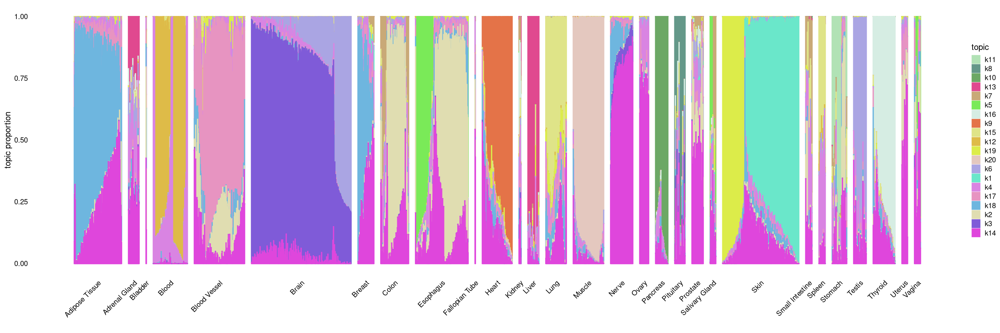

biwhitening ebnmf on GTEX data
DongyueXie
2022-10-19
Last updated: 2023-03-19
Checks: 7 0
Knit directory: SMF/
This reproducible R Markdown analysis was created with workflowr (version 1.6.2). The Checks tab describes the reproducibility checks that were applied when the results were created. The Past versions tab lists the development history.
Great! Since the R Markdown file has been committed to the Git repository, you know the exact version of the code that produced these results.
Great job! The global environment was empty. Objects defined in the global environment can affect the analysis in your R Markdown file in unknown ways. For reproduciblity it’s best to always run the code in an empty environment.
The command set.seed(20190719) was run prior to running
the code in the R Markdown file. Setting a seed ensures that any results
that rely on randomness, e.g. subsampling or permutations, are
reproducible.
Great job! Recording the operating system, R version, and package versions is critical for reproducibility.
Nice! There were no cached chunks for this analysis, so you can be confident that you successfully produced the results during this run.
Great job! Using relative paths to the files within your workflowr project makes it easier to run your code on other machines.
Great! You are using Git for version control. Tracking code development and connecting the code version to the results is critical for reproducibility.
The results in this page were generated with repository version e6de2d3. See the Past versions tab to see a history of the changes made to the R Markdown and HTML files.
Note that you need to be careful to ensure that all relevant files for
the analysis have been committed to Git prior to generating the results
(you can use wflow_publish or
wflow_git_commit). workflowr only checks the R Markdown
file, but you know if there are other scripts or data files that it
depends on. Below is the status of the Git repository when the results
were generated:
Ignored files:
Ignored: .Rhistory
Ignored: .Rproj.user/
Untracked files:
Untracked: Rplot.pdf
Untracked: data/count_files.RData
Untracked: data/lowgene/
Untracked: data/stmGTEx/
Untracked: output/luis/
Note that any generated files, e.g. HTML, png, CSS, etc., are not included in this status report because it is ok for generated content to have uncommitted changes.
These are the previous versions of the repository in which changes were
made to the R Markdown
(analysis/biwhitening_ebnmf_gtex.Rmd) and HTML
(docs/biwhitening_ebnmf_gtex.html) files. If you’ve
configured a remote Git repository (see ?wflow_git_remote),
click on the hyperlinks in the table below to view the files as they
were in that past version.
| File | Version | Author | Date | Message |
|---|---|---|---|---|
| Rmd | e6de2d3 | DongyueXie | 2023-03-19 | wflow_publish("analysis/biwhitening_ebnmf_gtex.Rmd") |
Introduction
library(fastTopics)
# fit the model on
fit = readRDS('/project2/mstephens/dongyue/gtex/V8/analysis/biwhite_ebnmf_fit.rds')
datax = readRDS('/project2/mstephens/dongyue/gtex/V8/data/gtex_v8.rds')
sample_info_tissue = datax$samplesfit_list <- list(L = fit$ldf$l[,-1]%*%diag(fit$ldf$d[-1]),F = fit$ldf$f[,-1])
class(fit_list) <- c("multinom_topic_model_fit", "list")
colors = randomcoloR::distinctColorPalette(30)
structure_plot(fit_list,grouping = sample_info_tissue$SMTS,colors = colors,gap=20)Running tsne on 135 x 29 matrix.Read the 135 x 29 data matrix successfully!
OpenMP is working. 1 threads.
Using no_dims = 1, perplexity = 43.000000, and theta = 0.100000
Computing input similarities...
Building tree...
Done in 0.02 seconds (sparsity = 0.990288)!
Learning embedding...
Iteration 50: error is 46.401502 (50 iterations in 0.02 seconds)
Iteration 100: error is 48.543833 (50 iterations in 0.01 seconds)
Iteration 150: error is 48.976848 (50 iterations in 0.01 seconds)
Iteration 200: error is 50.903329 (50 iterations in 0.02 seconds)
Iteration 250: error is 48.871837 (50 iterations in 0.01 seconds)
Iteration 300: error is 0.652649 (50 iterations in 0.01 seconds)
Iteration 350: error is 0.533821 (50 iterations in 0.01 seconds)
Iteration 400: error is 0.533680 (50 iterations in 0.01 seconds)
Iteration 450: error is 0.533688 (50 iterations in 0.01 seconds)
Iteration 500: error is 0.533688 (50 iterations in 0.01 seconds)
Iteration 550: error is 0.533688 (50 iterations in 0.01 seconds)
Iteration 600: error is 0.533688 (50 iterations in 0.01 seconds)
Iteration 650: error is 0.533688 (50 iterations in 0.03 seconds)
Iteration 700: error is 0.533688 (50 iterations in 0.01 seconds)
Iteration 750: error is 0.533688 (50 iterations in 0.01 seconds)
Iteration 800: error is 0.533688 (50 iterations in 0.01 seconds)
Iteration 850: error is 0.533688 (50 iterations in 0.01 seconds)
Iteration 900: error is 0.533688 (50 iterations in 0.01 seconds)
Iteration 950: error is 0.533688 (50 iterations in 0.01 seconds)
Iteration 1000: error is 0.533688 (50 iterations in 0.01 seconds)
Fitting performed in 0.24 seconds.Running tsne on 27 x 29 matrix.Read the 27 x 29 data matrix successfully!
OpenMP is working. 1 threads.
Using no_dims = 1, perplexity = 7.000000, and theta = 0.100000
Computing input similarities...
Building tree...
Done in 0.00 seconds (sparsity = 0.899863)!
Learning embedding...
Iteration 50: error is 66.566852 (50 iterations in 0.00 seconds)
Iteration 100: error is 69.631191 (50 iterations in 0.00 seconds)
Iteration 150: error is 63.394526 (50 iterations in 0.00 seconds)
Iteration 200: error is 67.868672 (50 iterations in 0.00 seconds)
Iteration 250: error is 68.552293 (50 iterations in 0.01 seconds)
Iteration 300: error is 4.873951 (50 iterations in 0.00 seconds)
Iteration 350: error is 6.846111 (50 iterations in 0.00 seconds)
Iteration 400: error is 3.153280 (50 iterations in 0.00 seconds)
Iteration 450: error is 2.873328 (50 iterations in 0.00 seconds)
Iteration 500: error is 2.805528 (50 iterations in 0.00 seconds)
Iteration 550: error is 2.793224 (50 iterations in 0.00 seconds)
Iteration 600: error is 2.793203 (50 iterations in 0.00 seconds)
Iteration 650: error is 2.793202 (50 iterations in 0.00 seconds)
Iteration 700: error is 2.793202 (50 iterations in 0.00 seconds)
Iteration 750: error is 2.793202 (50 iterations in 0.00 seconds)
Iteration 800: error is 2.793202 (50 iterations in 0.01 seconds)
Iteration 850: error is 2.793202 (50 iterations in 0.00 seconds)
Iteration 900: error is 2.793202 (50 iterations in 0.00 seconds)
Iteration 950: error is 2.793201 (50 iterations in 0.00 seconds)
Iteration 1000: error is 2.793201 (50 iterations in 0.00 seconds)
Fitting performed in 0.02 seconds.Running tsne on 110 x 29 matrix.Read the 110 x 29 data matrix successfully!
OpenMP is working. 1 threads.
Using no_dims = 1, perplexity = 35.000000, and theta = 0.100000
Computing input similarities...
Building tree...
Done in 0.02 seconds (sparsity = 0.988430)!
Learning embedding...
Iteration 50: error is 47.275907 (50 iterations in 0.01 seconds)
Iteration 100: error is 50.258059 (50 iterations in 0.01 seconds)
Iteration 150: error is 50.020751 (50 iterations in 0.01 seconds)
Iteration 200: error is 51.094191 (50 iterations in 0.01 seconds)
Iteration 250: error is 51.665367 (50 iterations in 0.01 seconds)
Iteration 300: error is 1.094354 (50 iterations in 0.01 seconds)
Iteration 350: error is 0.605376 (50 iterations in 0.01 seconds)
Iteration 400: error is 0.544688 (50 iterations in 0.00 seconds)
Iteration 450: error is 0.543993 (50 iterations in 0.01 seconds)
Iteration 500: error is 0.543993 (50 iterations in 0.01 seconds)
Iteration 550: error is 0.543993 (50 iterations in 0.01 seconds)
Iteration 600: error is 0.543992 (50 iterations in 0.00 seconds)
Iteration 650: error is 0.543994 (50 iterations in 0.01 seconds)
Iteration 700: error is 0.543993 (50 iterations in 0.01 seconds)
Iteration 750: error is 0.543993 (50 iterations in 0.01 seconds)
Iteration 800: error is 0.543993 (50 iterations in 0.00 seconds)
Iteration 850: error is 0.543990 (50 iterations in 0.01 seconds)
Iteration 900: error is 0.543991 (50 iterations in 0.01 seconds)
Iteration 950: error is 0.543991 (50 iterations in 0.00 seconds)
Iteration 1000: error is 0.543993 (50 iterations in 0.01 seconds)
Fitting performed in 0.16 seconds.Running tsne on 156 x 29 matrix.Read the 156 x 29 data matrix successfully!
OpenMP is working. 1 threads.
Using no_dims = 1, perplexity = 50.000000, and theta = 0.100000
Computing input similarities...
Building tree...
Done in 0.04 seconds (sparsity = 0.991535)!
Learning embedding...
Iteration 50: error is 44.681675 (50 iterations in 0.01 seconds)
Iteration 100: error is 44.997072 (50 iterations in 0.02 seconds)
Iteration 150: error is 44.960341 (50 iterations in 0.02 seconds)
Iteration 200: error is 44.645784 (50 iterations in 0.01 seconds)
Iteration 250: error is 45.689270 (50 iterations in 0.02 seconds)
Iteration 300: error is 0.886737 (50 iterations in 0.02 seconds)
Iteration 350: error is 0.677647 (50 iterations in 0.01 seconds)
Iteration 400: error is 0.676346 (50 iterations in 0.01 seconds)
Iteration 450: error is 0.676349 (50 iterations in 0.01 seconds)
Iteration 500: error is 0.676346 (50 iterations in 0.01 seconds)
Iteration 550: error is 0.676349 (50 iterations in 0.02 seconds)
Iteration 600: error is 0.676349 (50 iterations in 0.01 seconds)
Iteration 650: error is 0.676346 (50 iterations in 0.01 seconds)
Iteration 700: error is 0.676346 (50 iterations in 0.02 seconds)
Iteration 750: error is 0.676346 (50 iterations in 0.01 seconds)
Iteration 800: error is 0.676346 (50 iterations in 0.01 seconds)
Iteration 850: error is 0.676346 (50 iterations in 0.01 seconds)
Iteration 900: error is 0.676349 (50 iterations in 0.01 seconds)
Iteration 950: error is 0.676349 (50 iterations in 0.02 seconds)
Iteration 1000: error is 0.676349 (50 iterations in 0.01 seconds)
Fitting performed in 0.27 seconds.Running tsne on 313 x 29 matrix.Read the 313 x 29 data matrix successfully!
OpenMP is working. 1 threads.
Using no_dims = 1, perplexity = 100.000000, and theta = 0.100000
Computing input similarities...
Building tree...
Done in 0.16 seconds (sparsity = 0.993865)!
Learning embedding...
Iteration 50: error is 42.148390 (50 iterations in 0.05 seconds)
Iteration 100: error is 42.150041 (50 iterations in 0.05 seconds)
Iteration 150: error is 42.148852 (50 iterations in 0.04 seconds)
Iteration 200: error is 42.149553 (50 iterations in 0.04 seconds)
Iteration 250: error is 42.146924 (50 iterations in 0.04 seconds)
Iteration 300: error is 0.471079 (50 iterations in 0.04 seconds)
Iteration 350: error is 0.470319 (50 iterations in 0.04 seconds)
Iteration 400: error is 0.470314 (50 iterations in 0.04 seconds)
Iteration 450: error is 0.470314 (50 iterations in 0.04 seconds)
Iteration 500: error is 0.470315 (50 iterations in 0.04 seconds)
Iteration 550: error is 0.470314 (50 iterations in 0.04 seconds)
Iteration 600: error is 0.470314 (50 iterations in 0.04 seconds)
Iteration 650: error is 0.470314 (50 iterations in 0.04 seconds)
Iteration 700: error is 0.470314 (50 iterations in 0.04 seconds)
Iteration 750: error is 0.470314 (50 iterations in 0.04 seconds)
Iteration 800: error is 0.470314 (50 iterations in 0.04 seconds)
Iteration 850: error is 0.470314 (50 iterations in 0.04 seconds)
Iteration 900: error is 0.470314 (50 iterations in 0.04 seconds)
Iteration 950: error is 0.470314 (50 iterations in 0.04 seconds)
Iteration 1000: error is 0.470314 (50 iterations in 0.04 seconds)
Fitting performed in 0.82 seconds.Running tsne on 51 x 29 matrix.Read the 51 x 29 data matrix successfully!
OpenMP is working. 1 threads.
Using no_dims = 1, perplexity = 15.000000, and theta = 0.100000
Computing input similarities...
Building tree...
Done in 0.00 seconds (sparsity = 0.961169)!
Learning embedding...
Iteration 50: error is 52.788392 (50 iterations in 0.01 seconds)
Iteration 100: error is 53.308064 (50 iterations in 0.00 seconds)
Iteration 150: error is 51.610098 (50 iterations in 0.00 seconds)
Iteration 200: error is 46.403477 (50 iterations in 0.00 seconds)
Iteration 250: error is 44.694294 (50 iterations in 0.01 seconds)
Iteration 300: error is 1.311287 (50 iterations in 0.00 seconds)
Iteration 350: error is 0.821423 (50 iterations in 0.00 seconds)
Iteration 400: error is 0.705963 (50 iterations in 0.01 seconds)
Iteration 450: error is 0.696194 (50 iterations in 0.00 seconds)
Iteration 500: error is 0.696130 (50 iterations in 0.00 seconds)
Iteration 550: error is 0.696131 (50 iterations in 0.00 seconds)
Iteration 600: error is 0.696131 (50 iterations in 0.00 seconds)
Iteration 650: error is 0.696130 (50 iterations in 0.01 seconds)
Iteration 700: error is 0.696130 (50 iterations in 0.00 seconds)
Iteration 750: error is 0.696130 (50 iterations in 0.00 seconds)
Iteration 800: error is 0.696130 (50 iterations in 0.00 seconds)
Iteration 850: error is 0.696130 (50 iterations in 0.00 seconds)
Iteration 900: error is 0.696130 (50 iterations in 0.01 seconds)
Iteration 950: error is 0.696130 (50 iterations in 0.00 seconds)
Iteration 1000: error is 0.696130 (50 iterations in 0.00 seconds)
Fitting performed in 0.05 seconds.Running tsne on 87 x 29 matrix.Read the 87 x 29 data matrix successfully!
OpenMP is working. 1 threads.
Using no_dims = 1, perplexity = 27.000000, and theta = 0.100000
Computing input similarities...
Building tree...
Done in 0.01 seconds (sparsity = 0.982164)!
Learning embedding...
Iteration 50: error is 50.330622 (50 iterations in 0.00 seconds)
Iteration 100: error is 50.600489 (50 iterations in 0.00 seconds)
Iteration 150: error is 51.296204 (50 iterations in 0.01 seconds)
Iteration 200: error is 52.602951 (50 iterations in 0.00 seconds)
Iteration 250: error is 50.078511 (50 iterations in 0.00 seconds)
Iteration 300: error is 1.879135 (50 iterations in 0.01 seconds)
Iteration 350: error is 0.518113 (50 iterations in 0.00 seconds)
Iteration 400: error is 0.456392 (50 iterations in 0.00 seconds)
Iteration 450: error is 0.456433 (50 iterations in 0.01 seconds)
Iteration 500: error is 0.456433 (50 iterations in 0.00 seconds)
Iteration 550: error is 0.456433 (50 iterations in 0.01 seconds)
Iteration 600: error is 0.456433 (50 iterations in 0.00 seconds)
Iteration 650: error is 0.456433 (50 iterations in 0.01 seconds)
Iteration 700: error is 0.456433 (50 iterations in 0.00 seconds)
Iteration 750: error is 0.456433 (50 iterations in 0.01 seconds)
Iteration 800: error is 0.456433 (50 iterations in 0.00 seconds)
Iteration 850: error is 0.456433 (50 iterations in 0.01 seconds)
Iteration 900: error is 0.456433 (50 iterations in 0.00 seconds)
Iteration 950: error is 0.456433 (50 iterations in 0.01 seconds)
Iteration 1000: error is 0.456433 (50 iterations in 0.00 seconds)
Fitting performed in 0.08 seconds.Running tsne on 160 x 29 matrix.Read the 160 x 29 data matrix successfully!
OpenMP is working. 1 threads.
Using no_dims = 1, perplexity = 52.000000, and theta = 0.100000
Computing input similarities...
Building tree...
Done in 0.04 seconds (sparsity = 0.993047)!
Learning embedding...
Iteration 50: error is 39.033451 (50 iterations in 0.01 seconds)
Iteration 100: error is 41.122176 (50 iterations in 0.02 seconds)
Iteration 150: error is 39.587239 (50 iterations in 0.02 seconds)
Iteration 200: error is 40.607513 (50 iterations in 0.01 seconds)
Iteration 250: error is 40.001540 (50 iterations in 0.02 seconds)
Iteration 300: error is 0.402500 (50 iterations in 0.02 seconds)
Iteration 350: error is 0.243015 (50 iterations in 0.01 seconds)
Iteration 400: error is 0.241256 (50 iterations in 0.02 seconds)
Iteration 450: error is 0.241251 (50 iterations in 0.01 seconds)
Iteration 500: error is 0.241252 (50 iterations in 0.01 seconds)
Iteration 550: error is 0.241258 (50 iterations in 0.01 seconds)
Iteration 600: error is 0.241258 (50 iterations in 0.01 seconds)
Iteration 650: error is 0.241252 (50 iterations in 0.02 seconds)
Iteration 700: error is 0.241251 (50 iterations in 0.01 seconds)
Iteration 750: error is 0.241258 (50 iterations in 0.01 seconds)
Iteration 800: error is 0.241258 (50 iterations in 0.01 seconds)
Iteration 850: error is 0.241252 (50 iterations in 0.01 seconds)
Iteration 900: error is 0.241252 (50 iterations in 0.02 seconds)
Iteration 950: error is 0.241252 (50 iterations in 0.01 seconds)
Iteration 1000: error is 0.241252 (50 iterations in 0.01 seconds)
Fitting performed in 0.27 seconds.Running tsne on 90 x 29 matrix.Read the 90 x 29 data matrix successfully!
OpenMP is working. 1 threads.
Using no_dims = 1, perplexity = 28.000000, and theta = 0.100000
Computing input similarities...
Building tree...
Done in 0.01 seconds (sparsity = 0.982716)!
Learning embedding...
Iteration 50: error is 46.733543 (50 iterations in 0.01 seconds)
Iteration 100: error is 49.354237 (50 iterations in 0.01 seconds)
Iteration 150: error is 48.683885 (50 iterations in 0.00 seconds)
Iteration 200: error is 50.301221 (50 iterations in 0.01 seconds)
Iteration 250: error is 50.162401 (50 iterations in 0.01 seconds)
Iteration 300: error is 1.402206 (50 iterations in 0.00 seconds)
Iteration 350: error is 0.585728 (50 iterations in 0.00 seconds)
Iteration 400: error is 0.584398 (50 iterations in 0.01 seconds)
Iteration 450: error is 0.584401 (50 iterations in 0.00 seconds)
Iteration 500: error is 0.584401 (50 iterations in 0.01 seconds)
Iteration 550: error is 0.584400 (50 iterations in 0.00 seconds)
Iteration 600: error is 0.584401 (50 iterations in 0.01 seconds)
Iteration 650: error is 0.584401 (50 iterations in 0.00 seconds)
Iteration 700: error is 0.584401 (50 iterations in 0.01 seconds)
Iteration 750: error is 0.584401 (50 iterations in 0.00 seconds)
Iteration 800: error is 0.584401 (50 iterations in 0.01 seconds)
Iteration 850: error is 0.584400 (50 iterations in 0.00 seconds)
Iteration 900: error is 0.584401 (50 iterations in 0.01 seconds)
Iteration 950: error is 0.584400 (50 iterations in 0.01 seconds)
Iteration 1000: error is 0.584401 (50 iterations in 0.00 seconds)
Fitting performed in 0.11 seconds.Running tsne on 37 x 29 matrix.Read the 37 x 29 data matrix successfully!
OpenMP is working. 1 threads.
Using no_dims = 1, perplexity = 11.000000, and theta = 0.100000
Computing input similarities...
Building tree...
Done in 0.00 seconds (sparsity = 0.959825)!
Learning embedding...
Iteration 50: error is 58.863424 (50 iterations in 0.00 seconds)
Iteration 100: error is 53.494967 (50 iterations in 0.01 seconds)
Iteration 150: error is 61.320571 (50 iterations in 0.00 seconds)
Iteration 200: error is 58.501593 (50 iterations in 0.00 seconds)
Iteration 250: error is 56.179780 (50 iterations in 0.00 seconds)
Iteration 300: error is 2.801841 (50 iterations in 0.00 seconds)
Iteration 350: error is 2.687206 (50 iterations in 0.00 seconds)
Iteration 400: error is 0.992730 (50 iterations in 0.01 seconds)
Iteration 450: error is 0.510734 (50 iterations in 0.00 seconds)
Iteration 500: error is 0.507805 (50 iterations in 0.00 seconds)
Iteration 550: error is 0.507790 (50 iterations in 0.00 seconds)
Iteration 600: error is 0.507791 (50 iterations in 0.00 seconds)
Iteration 650: error is 0.507791 (50 iterations in 0.00 seconds)
Iteration 700: error is 0.507791 (50 iterations in 0.00 seconds)
Iteration 750: error is 0.507791 (50 iterations in 0.01 seconds)
Iteration 800: error is 0.507791 (50 iterations in 0.00 seconds)
Iteration 850: error is 0.507791 (50 iterations in 0.00 seconds)
Iteration 900: error is 0.507791 (50 iterations in 0.00 seconds)
Iteration 950: error is 0.507791 (50 iterations in 0.00 seconds)
Iteration 1000: error is 0.507791 (50 iterations in 0.00 seconds)
Fitting performed in 0.03 seconds.Running tsne on 62 x 29 matrix.Read the 62 x 29 data matrix successfully!
OpenMP is working. 1 threads.
Using no_dims = 1, perplexity = 19.000000, and theta = 0.100000
Computing input similarities...
Building tree...
Done in 0.00 seconds (sparsity = 0.975546)!
Learning embedding...
Iteration 50: error is 54.207103 (50 iterations in 0.01 seconds)
Iteration 100: error is 56.754564 (50 iterations in 0.00 seconds)
Iteration 150: error is 52.661005 (50 iterations in 0.01 seconds)
Iteration 200: error is 55.063779 (50 iterations in 0.00 seconds)
Iteration 250: error is 53.633380 (50 iterations in 0.00 seconds)
Iteration 300: error is 2.528563 (50 iterations in 0.01 seconds)
Iteration 350: error is 0.442804 (50 iterations in 0.00 seconds)
Iteration 400: error is 0.363932 (50 iterations in 0.00 seconds)
Iteration 450: error is 0.363903 (50 iterations in 0.01 seconds)
Iteration 500: error is 0.363903 (50 iterations in 0.00 seconds)
Iteration 550: error is 0.363903 (50 iterations in 0.00 seconds)
Iteration 600: error is 0.363903 (50 iterations in 0.01 seconds)
Iteration 650: error is 0.363903 (50 iterations in 0.00 seconds)
Iteration 700: error is 0.363903 (50 iterations in 0.00 seconds)
Iteration 750: error is 0.363903 (50 iterations in 0.01 seconds)
Iteration 800: error is 0.363903 (50 iterations in 0.00 seconds)
Iteration 850: error is 0.363903 (50 iterations in 0.00 seconds)
Iteration 900: error is 0.363903 (50 iterations in 0.00 seconds)
Iteration 950: error is 0.363903 (50 iterations in 0.01 seconds)
Iteration 1000: error is 0.363903 (50 iterations in 0.00 seconds)
Fitting performed in 0.07 seconds.Running tsne on 91 x 29 matrix.Read the 91 x 29 data matrix successfully!
OpenMP is working. 1 threads.
Using no_dims = 1, perplexity = 29.000000, and theta = 0.100000
Computing input similarities...
Building tree...
Done in 0.01 seconds (sparsity = 0.986837)!
Learning embedding...
Iteration 50: error is 48.384959 (50 iterations in 0.01 seconds)
Iteration 100: error is 48.680368 (50 iterations in 0.00 seconds)
Iteration 150: error is 51.088120 (50 iterations in 0.01 seconds)
Iteration 200: error is 47.055584 (50 iterations in 0.01 seconds)
Iteration 250: error is 49.624294 (50 iterations in 0.01 seconds)
Iteration 300: error is 1.485989 (50 iterations in 0.00 seconds)
Iteration 350: error is 0.738766 (50 iterations in 0.01 seconds)
Iteration 400: error is 0.723835 (50 iterations in 0.01 seconds)
Iteration 450: error is 0.723826 (50 iterations in 0.00 seconds)
Iteration 500: error is 0.723824 (50 iterations in 0.01 seconds)
Iteration 550: error is 0.723826 (50 iterations in 0.00 seconds)
Iteration 600: error is 0.723823 (50 iterations in 0.01 seconds)
Iteration 650: error is 0.723826 (50 iterations in 0.00 seconds)
Iteration 700: error is 0.723828 (50 iterations in 0.01 seconds)
Iteration 750: error is 0.723831 (50 iterations in 0.00 seconds)
Iteration 800: error is 0.723832 (50 iterations in 0.01 seconds)
Iteration 850: error is 0.723825 (50 iterations in 0.01 seconds)
Iteration 900: error is 0.723829 (50 iterations in 0.00 seconds)
Iteration 950: error is 0.723830 (50 iterations in 0.01 seconds)
Iteration 1000: error is 0.723831 (50 iterations in 0.00 seconds)
Fitting performed in 0.12 seconds.Running tsne on 78 x 29 matrix.Read the 78 x 29 data matrix successfully!
OpenMP is working. 1 threads.
Using no_dims = 1, perplexity = 24.000000, and theta = 0.100000
Computing input similarities...
Building tree...
Done in 0.01 seconds (sparsity = 0.980276)!
Learning embedding...
Iteration 50: error is 54.089465 (50 iterations in 0.00 seconds)
Iteration 100: error is 55.532287 (50 iterations in 0.01 seconds)
Iteration 150: error is 49.638759 (50 iterations in 0.01 seconds)
Iteration 200: error is 50.723481 (50 iterations in 0.00 seconds)
Iteration 250: error is 54.533267 (50 iterations in 0.01 seconds)
Iteration 300: error is 2.133457 (50 iterations in 0.00 seconds)
Iteration 350: error is 0.977515 (50 iterations in 0.01 seconds)
Iteration 400: error is 0.867501 (50 iterations in 0.00 seconds)
Iteration 450: error is 0.867441 (50 iterations in 0.01 seconds)
Iteration 500: error is 0.867441 (50 iterations in 0.00 seconds)
Iteration 550: error is 0.867441 (50 iterations in 0.01 seconds)
Iteration 600: error is 0.867440 (50 iterations in 0.00 seconds)
Iteration 650: error is 0.867440 (50 iterations in 0.00 seconds)
Iteration 700: error is 0.867441 (50 iterations in 0.00 seconds)
Iteration 750: error is 0.867440 (50 iterations in 0.00 seconds)
Iteration 800: error is 0.867440 (50 iterations in 0.01 seconds)
Iteration 850: error is 0.867441 (50 iterations in 0.00 seconds)
Iteration 900: error is 0.867440 (50 iterations in 0.01 seconds)
Iteration 950: error is 0.867441 (50 iterations in 0.00 seconds)
Iteration 1000: error is 0.867440 (50 iterations in 0.01 seconds)
Fitting performed in 0.09 seconds.Running tsne on 24 x 29 matrix.Read the 24 x 29 data matrix successfully!
OpenMP is working. 1 threads.
Using no_dims = 1, perplexity = 6.000000, and theta = 0.100000
Computing input similarities...
Building tree...
Done in 0.00 seconds (sparsity = 0.875000)!
Learning embedding...
Iteration 50: error is 76.624856 (50 iterations in 0.00 seconds)
Iteration 100: error is 73.453629 (50 iterations in 0.00 seconds)
Iteration 150: error is 69.231988 (50 iterations in 0.00 seconds)
Iteration 200: error is 67.861216 (50 iterations in 0.00 seconds)
Iteration 250: error is 66.916632 (50 iterations in 0.00 seconds)
Iteration 300: error is 3.426750 (50 iterations in 0.00 seconds)
Iteration 350: error is 4.912863 (50 iterations in 0.00 seconds)
Iteration 400: error is 2.976020 (50 iterations in 0.00 seconds)
Iteration 450: error is 2.850860 (50 iterations in 0.00 seconds)
Iteration 500: error is 2.812038 (50 iterations in 0.00 seconds)
Iteration 550: error is 2.784409 (50 iterations in 0.01 seconds)
Iteration 600: error is 2.751046 (50 iterations in 0.00 seconds)
Iteration 650: error is 2.665013 (50 iterations in 0.00 seconds)
Iteration 700: error is 2.645495 (50 iterations in 0.00 seconds)
Iteration 750: error is 2.640354 (50 iterations in 0.00 seconds)
Iteration 800: error is 2.639409 (50 iterations in 0.00 seconds)
Iteration 850: error is 2.639355 (50 iterations in 0.00 seconds)
Iteration 900: error is 2.639353 (50 iterations in 0.00 seconds)
Iteration 950: error is 2.639353 (50 iterations in 0.00 seconds)
Iteration 1000: error is 2.639353 (50 iterations in 0.00 seconds)
Fitting performed in 0.01 seconds.Running tsne on 36 x 29 matrix.Read the 36 x 29 data matrix successfully!
OpenMP is working. 1 threads.
Using no_dims = 1, perplexity = 10.000000, and theta = 0.100000
Computing input similarities...
Building tree...
Done in 0.00 seconds (sparsity = 0.936728)!
Learning embedding...
Iteration 50: error is 61.368782 (50 iterations in 0.00 seconds)
Iteration 100: error is 61.722733 (50 iterations in 0.00 seconds)
Iteration 150: error is 58.469802 (50 iterations in 0.01 seconds)
Iteration 200: error is 58.025563 (50 iterations in 0.00 seconds)
Iteration 250: error is 59.911695 (50 iterations in 0.00 seconds)
Iteration 300: error is 3.296543 (50 iterations in 0.00 seconds)
Iteration 350: error is 4.912062 (50 iterations in 0.00 seconds)
Iteration 400: error is 4.673741 (50 iterations in 0.00 seconds)
Iteration 450: error is 4.474689 (50 iterations in 0.01 seconds)
Iteration 500: error is 5.158519 (50 iterations in 0.00 seconds)
Iteration 550: error is 3.611497 (50 iterations in 0.00 seconds)
Iteration 600: error is 3.328865 (50 iterations in 0.00 seconds)
Iteration 650: error is 3.302460 (50 iterations in 0.00 seconds)
Iteration 700: error is 3.279820 (50 iterations in 0.00 seconds)
Iteration 750: error is 3.260546 (50 iterations in 0.00 seconds)
Iteration 800: error is 3.242779 (50 iterations in 0.00 seconds)
Iteration 850: error is 3.223678 (50 iterations in 0.01 seconds)
Iteration 900: error is 3.212261 (50 iterations in 0.00 seconds)
Iteration 950: error is 3.199920 (50 iterations in 0.00 seconds)
Iteration 1000: error is 3.184258 (50 iterations in 0.00 seconds)
Fitting performed in 0.03 seconds.Running tsne on 38 x 29 matrix.Read the 38 x 29 data matrix successfully!
OpenMP is working. 1 threads.
Using no_dims = 1, perplexity = 11.000000, and theta = 0.100000
Computing input similarities...
Building tree...
Done in 0.00 seconds (sparsity = 0.951524)!
Learning embedding...
Iteration 50: error is 58.602173 (50 iterations in 0.00 seconds)
Iteration 100: error is 63.696714 (50 iterations in 0.01 seconds)
Iteration 150: error is 58.213191 (50 iterations in 0.00 seconds)
Iteration 200: error is 55.394358 (50 iterations in 0.00 seconds)
Iteration 250: error is 59.720480 (50 iterations in 0.00 seconds)
Iteration 300: error is 4.032879 (50 iterations in 0.00 seconds)
Iteration 350: error is 5.008497 (50 iterations in 0.00 seconds)
Iteration 400: error is 5.915194 (50 iterations in 0.00 seconds)
Iteration 450: error is 3.245362 (50 iterations in 0.00 seconds)
Iteration 500: error is 3.217413 (50 iterations in 0.00 seconds)
Iteration 550: error is 3.215365 (50 iterations in 0.00 seconds)
Iteration 600: error is 3.215232 (50 iterations in 0.00 seconds)
Iteration 650: error is 3.215226 (50 iterations in 0.00 seconds)
Iteration 700: error is 3.215221 (50 iterations in 0.00 seconds)
Iteration 750: error is 3.215213 (50 iterations in 0.01 seconds)
Iteration 800: error is 3.215202 (50 iterations in 0.00 seconds)
Iteration 850: error is 3.215189 (50 iterations in 0.00 seconds)
Iteration 900: error is 3.215175 (50 iterations in 0.01 seconds)
Iteration 950: error is 3.215158 (50 iterations in 0.00 seconds)
Iteration 1000: error is 3.215141 (50 iterations in 0.00 seconds)
Fitting performed in 0.03 seconds.Running tsne on 30 x 29 matrix.Read the 30 x 29 data matrix successfully!
OpenMP is working. 1 threads.
Using no_dims = 1, perplexity = 8.000000, and theta = 0.100000
Computing input similarities...
Building tree...
Done in 0.00 seconds (sparsity = 0.911111)!
Learning embedding...
Iteration 50: error is 68.940329 (50 iterations in 0.00 seconds)
Iteration 100: error is 70.993526 (50 iterations in 0.01 seconds)
Iteration 150: error is 65.236652 (50 iterations in 0.00 seconds)
Iteration 200: error is 64.978472 (50 iterations in 0.00 seconds)
Iteration 250: error is 68.547806 (50 iterations in 0.00 seconds)
Iteration 300: error is 4.126438 (50 iterations in 0.00 seconds)
Iteration 350: error is 5.101133 (50 iterations in 0.00 seconds)
Iteration 400: error is 4.525456 (50 iterations in 0.00 seconds)
Iteration 450: error is 2.719755 (50 iterations in 0.00 seconds)
Iteration 500: error is 2.504163 (50 iterations in 0.00 seconds)
Iteration 550: error is 2.488376 (50 iterations in 0.01 seconds)
Iteration 600: error is 2.484823 (50 iterations in 0.00 seconds)
Iteration 650: error is 2.483644 (50 iterations in 0.00 seconds)
Iteration 700: error is 2.483298 (50 iterations in 0.00 seconds)
Iteration 750: error is 2.483208 (50 iterations in 0.00 seconds)
Iteration 800: error is 2.483162 (50 iterations in 0.00 seconds)
Iteration 850: error is 2.483162 (50 iterations in 0.00 seconds)
Iteration 900: error is 2.483162 (50 iterations in 0.00 seconds)
Iteration 950: error is 2.483162 (50 iterations in 0.00 seconds)
Iteration 1000: error is 2.483162 (50 iterations in 0.00 seconds)
Fitting performed in 0.02 seconds.Running tsne on 21 x 29 matrix.Read the 21 x 29 data matrix successfully!
OpenMP is working. 1 threads.
Using no_dims = 1, perplexity = 5.000000, and theta = 0.100000
Computing input similarities...
Building tree...
Done in 0.00 seconds (sparsity = 0.870748)!
Learning embedding...
Iteration 50: error is 69.958408 (50 iterations in 0.00 seconds)
Iteration 100: error is 70.407102 (50 iterations in 0.01 seconds)
Iteration 150: error is 74.727332 (50 iterations in 0.00 seconds)
Iteration 200: error is 71.008240 (50 iterations in 0.00 seconds)
Iteration 250: error is 75.592085 (50 iterations in 0.00 seconds)
Iteration 300: error is 3.548535 (50 iterations in 0.00 seconds)
Iteration 350: error is 2.681925 (50 iterations in 0.00 seconds)
Iteration 400: error is 2.583283 (50 iterations in 0.00 seconds)
Iteration 450: error is 2.571805 (50 iterations in 0.00 seconds)
Iteration 500: error is 2.568698 (50 iterations in 0.00 seconds)
Iteration 550: error is 2.568232 (50 iterations in 0.00 seconds)
Iteration 600: error is 2.568227 (50 iterations in 0.00 seconds)
Iteration 650: error is 2.568227 (50 iterations in 0.00 seconds)
Iteration 700: error is 2.568227 (50 iterations in 0.00 seconds)
Iteration 750: error is 2.568226 (50 iterations in 0.00 seconds)
Iteration 800: error is 2.568226 (50 iterations in 0.00 seconds)
Iteration 850: error is 2.568226 (50 iterations in 0.00 seconds)
Iteration 900: error is 2.568225 (50 iterations in 0.01 seconds)
Iteration 950: error is 2.568225 (50 iterations in 0.00 seconds)
Iteration 1000: error is 2.568224 (50 iterations in 0.00 seconds)
Fitting performed in 0.02 seconds.Running tsne on 205 x 29 matrix.Read the 205 x 29 data matrix successfully!
OpenMP is working. 1 threads.
Using no_dims = 1, perplexity = 67.000000, and theta = 0.100000
Computing input similarities...
Building tree...
Done in 0.06 seconds (sparsity = 0.994646)!
Learning embedding...
Iteration 50: error is 41.630206 (50 iterations in 0.02 seconds)
Iteration 100: error is 41.710744 (50 iterations in 0.03 seconds)
Iteration 150: error is 41.643827 (50 iterations in 0.02 seconds)
Iteration 200: error is 41.633716 (50 iterations in 0.03 seconds)
Iteration 250: error is 41.674842 (50 iterations in 0.02 seconds)
Iteration 300: error is 0.277167 (50 iterations in 0.02 seconds)
Iteration 350: error is 0.273933 (50 iterations in 0.01 seconds)
Iteration 400: error is 0.273930 (50 iterations in 0.02 seconds)
Iteration 450: error is 0.273930 (50 iterations in 0.02 seconds)
Iteration 500: error is 0.273930 (50 iterations in 0.02 seconds)
Iteration 550: error is 0.273930 (50 iterations in 0.02 seconds)
Iteration 600: error is 0.273930 (50 iterations in 0.02 seconds)
Iteration 650: error is 0.273930 (50 iterations in 0.02 seconds)
Iteration 700: error is 0.273930 (50 iterations in 0.02 seconds)
Iteration 750: error is 0.273930 (50 iterations in 0.02 seconds)
Iteration 800: error is 0.273930 (50 iterations in 0.02 seconds)
Iteration 850: error is 0.273930 (50 iterations in 0.02 seconds)
Iteration 900: error is 0.273931 (50 iterations in 0.02 seconds)
Iteration 950: error is 0.273930 (50 iterations in 0.01 seconds)
Iteration 1000: error is 0.273930 (50 iterations in 0.01 seconds)
Fitting performed in 0.39 seconds.Running tsne on 27 x 29 matrix.Read the 27 x 29 data matrix successfully!
OpenMP is working. 1 threads.
Using no_dims = 1, perplexity = 7.000000, and theta = 0.100000
Computing input similarities...
Building tree...
Done in 0.00 seconds (sparsity = 0.897119)!
Learning embedding...
Iteration 50: error is 65.325595 (50 iterations in 0.00 seconds)
Iteration 100: error is 69.845278 (50 iterations in 0.00 seconds)
Iteration 150: error is 63.599487 (50 iterations in 0.00 seconds)
Iteration 200: error is 69.812923 (50 iterations in 0.00 seconds)
Iteration 250: error is 67.621406 (50 iterations in 0.01 seconds)
Iteration 300: error is 5.177033 (50 iterations in 0.00 seconds)
Iteration 350: error is 5.049327 (50 iterations in 0.00 seconds)
Iteration 400: error is 6.434565 (50 iterations in 0.00 seconds)
Iteration 450: error is 3.287544 (50 iterations in 0.00 seconds)
Iteration 500: error is 2.884134 (50 iterations in 0.00 seconds)
Iteration 550: error is 2.820295 (50 iterations in 0.00 seconds)
Iteration 600: error is 2.781742 (50 iterations in 0.00 seconds)
Iteration 650: error is 2.741182 (50 iterations in 0.00 seconds)
Iteration 700: error is 2.716290 (50 iterations in 0.00 seconds)
Iteration 750: error is 2.711907 (50 iterations in 0.00 seconds)
Iteration 800: error is 2.711562 (50 iterations in 0.01 seconds)
Iteration 850: error is 2.711554 (50 iterations in 0.00 seconds)
Iteration 900: error is 2.711554 (50 iterations in 0.00 seconds)
Iteration 950: error is 2.711554 (50 iterations in 0.00 seconds)
Iteration 1000: error is 2.711554 (50 iterations in 0.00 seconds)
Fitting performed in 0.02 seconds.Running tsne on 37 x 29 matrix.Read the 37 x 29 data matrix successfully!
OpenMP is working. 1 threads.
Using no_dims = 1, perplexity = 11.000000, and theta = 0.100000
Computing input similarities...
Building tree...
Done in 0.00 seconds (sparsity = 0.959825)!
Learning embedding...
Iteration 50: error is 58.656351 (50 iterations in 0.00 seconds)
Iteration 100: error is 55.150697 (50 iterations in 0.00 seconds)
Iteration 150: error is 56.844069 (50 iterations in 0.01 seconds)
Iteration 200: error is 63.063470 (50 iterations in 0.00 seconds)
Iteration 250: error is 60.785935 (50 iterations in 0.00 seconds)
Iteration 300: error is 3.912730 (50 iterations in 0.00 seconds)
Iteration 350: error is 4.713248 (50 iterations in 0.00 seconds)
Iteration 400: error is 5.472318 (50 iterations in 0.00 seconds)
Iteration 450: error is 5.479385 (50 iterations in 0.01 seconds)
Iteration 500: error is 6.052819 (50 iterations in 0.00 seconds)
Iteration 550: error is 3.431112 (50 iterations in 0.00 seconds)
Iteration 600: error is 3.256735 (50 iterations in 0.00 seconds)
Iteration 650: error is 3.187696 (50 iterations in 0.00 seconds)
Iteration 700: error is 3.135876 (50 iterations in 0.00 seconds)
Iteration 750: error is 3.098242 (50 iterations in 0.00 seconds)
Iteration 800: error is 3.093630 (50 iterations in 0.01 seconds)
Iteration 850: error is 3.093430 (50 iterations in 0.00 seconds)
Iteration 900: error is 3.093401 (50 iterations in 0.00 seconds)
Iteration 950: error is 3.093394 (50 iterations in 0.00 seconds)
Iteration 1000: error is 3.093394 (50 iterations in 0.00 seconds)
Fitting performed in 0.03 seconds.Running tsne on 38 x 29 matrix.Read the 38 x 29 data matrix successfully!
OpenMP is working. 1 threads.
Using no_dims = 1, perplexity = 11.000000, and theta = 0.100000
Computing input similarities...
Building tree...
Done in 0.00 seconds (sparsity = 0.951524)!
Learning embedding...
Iteration 50: error is 59.200698 (50 iterations in 0.00 seconds)
Iteration 100: error is 60.420194 (50 iterations in 0.01 seconds)
Iteration 150: error is 58.024421 (50 iterations in 0.00 seconds)
Iteration 200: error is 57.559925 (50 iterations in 0.00 seconds)
Iteration 250: error is 57.080648 (50 iterations in 0.00 seconds)
Iteration 300: error is 3.265583 (50 iterations in 0.00 seconds)
Iteration 350: error is 3.002702 (50 iterations in 0.01 seconds)
Iteration 400: error is 2.733467 (50 iterations in 0.00 seconds)
Iteration 450: error is 2.715550 (50 iterations in 0.00 seconds)
Iteration 500: error is 2.712966 (50 iterations in 0.00 seconds)
Iteration 550: error is 2.708923 (50 iterations in 0.00 seconds)
Iteration 600: error is 2.703999 (50 iterations in 0.00 seconds)
Iteration 650: error is 2.698028 (50 iterations in 0.00 seconds)
Iteration 700: error is 2.689398 (50 iterations in 0.00 seconds)
Iteration 750: error is 2.676484 (50 iterations in 0.01 seconds)
Iteration 800: error is 2.652158 (50 iterations in 0.00 seconds)
Iteration 850: error is 2.605708 (50 iterations in 0.00 seconds)
Iteration 900: error is 2.323028 (50 iterations in 0.00 seconds)
Iteration 950: error is 0.960313 (50 iterations in 0.00 seconds)
Iteration 1000: error is 0.583708 (50 iterations in 0.00 seconds)
Fitting performed in 0.03 seconds.Running tsne on 85 x 29 matrix.Read the 85 x 29 data matrix successfully!
OpenMP is working. 1 threads.
Using no_dims = 1, perplexity = 27.000000, and theta = 0.100000
Computing input similarities...
Building tree...
Done in 0.01 seconds (sparsity = 0.985744)!
Learning embedding...
Iteration 50: error is 49.905251 (50 iterations in 0.01 seconds)
Iteration 100: error is 49.447341 (50 iterations in 0.01 seconds)
Iteration 150: error is 50.966412 (50 iterations in 0.00 seconds)
Iteration 200: error is 50.293762 (50 iterations in 0.01 seconds)
Iteration 250: error is 49.932812 (50 iterations in 0.00 seconds)
Iteration 300: error is 1.086345 (50 iterations in 0.00 seconds)
Iteration 350: error is 0.825766 (50 iterations in 0.01 seconds)
Iteration 400: error is 0.775502 (50 iterations in 0.00 seconds)
Iteration 450: error is 0.775472 (50 iterations in 0.01 seconds)
Iteration 500: error is 0.775472 (50 iterations in 0.00 seconds)
Iteration 550: error is 0.775472 (50 iterations in 0.01 seconds)
Iteration 600: error is 0.775462 (50 iterations in 0.00 seconds)
Iteration 650: error is 0.775463 (50 iterations in 0.01 seconds)
Iteration 700: error is 0.775462 (50 iterations in 0.00 seconds)
Iteration 750: error is 0.775472 (50 iterations in 0.01 seconds)
Iteration 800: error is 0.775463 (50 iterations in 0.00 seconds)
Iteration 850: error is 0.775463 (50 iterations in 0.01 seconds)
Iteration 900: error is 0.775462 (50 iterations in 0.00 seconds)
Iteration 950: error is 0.775472 (50 iterations in 0.01 seconds)
Iteration 1000: error is 0.775463 (50 iterations in 0.00 seconds)
Fitting performed in 0.10 seconds.structure_plot(fit_list,grouping = sample_info_tissue$SMTSD,colors = colors,gap=20)Running tsne on 82 x 29 matrix.Read the 82 x 29 data matrix successfully!
OpenMP is working. 1 threads.
Using no_dims = 1, perplexity = 26.000000, and theta = 0.100000
Computing input similarities...
Building tree...
Done in 0.01 seconds (sparsity = 0.984830)!
Learning embedding...
Iteration 50: error is 53.024257 (50 iterations in 0.00 seconds)
Iteration 100: error is 51.581125 (50 iterations in 0.01 seconds)
Iteration 150: error is 52.643334 (50 iterations in 0.01 seconds)
Iteration 200: error is 50.635624 (50 iterations in 0.00 seconds)
Iteration 250: error is 51.911593 (50 iterations in 0.01 seconds)
Iteration 300: error is 1.986750 (50 iterations in 0.00 seconds)
Iteration 350: error is 0.672726 (50 iterations in 0.01 seconds)
Iteration 400: error is 0.630549 (50 iterations in 0.01 seconds)
Iteration 450: error is 0.630506 (50 iterations in 0.00 seconds)
Iteration 500: error is 0.630507 (50 iterations in 0.00 seconds)
Iteration 550: error is 0.630506 (50 iterations in 0.01 seconds)
Iteration 600: error is 0.630507 (50 iterations in 0.00 seconds)
Iteration 650: error is 0.630507 (50 iterations in 0.01 seconds)
Iteration 700: error is 0.630483 (50 iterations in 0.00 seconds)
Iteration 750: error is 0.630507 (50 iterations in 0.01 seconds)
Iteration 800: error is 0.630507 (50 iterations in 0.00 seconds)
Iteration 850: error is 0.630507 (50 iterations in 0.01 seconds)
Iteration 900: error is 0.630504 (50 iterations in 0.00 seconds)
Iteration 950: error is 0.630507 (50 iterations in 0.01 seconds)
Iteration 1000: error is 0.630507 (50 iterations in 0.00 seconds)
Fitting performed in 0.10 seconds.Running tsne on 62 x 29 matrix.Read the 62 x 29 data matrix successfully!
OpenMP is working. 1 threads.
Using no_dims = 1, perplexity = 19.000000, and theta = 0.100000
Computing input similarities...
Building tree...
Done in 0.01 seconds (sparsity = 0.977107)!
Learning embedding...
Iteration 50: error is 55.795581 (50 iterations in 0.00 seconds)
Iteration 100: error is 55.510634 (50 iterations in 0.00 seconds)
Iteration 150: error is 54.973172 (50 iterations in 0.01 seconds)
Iteration 200: error is 54.093613 (50 iterations in 0.00 seconds)
Iteration 250: error is 53.422985 (50 iterations in 0.01 seconds)
Iteration 300: error is 1.452594 (50 iterations in 0.00 seconds)
Iteration 350: error is 0.764175 (50 iterations in 0.00 seconds)
Iteration 400: error is 0.735255 (50 iterations in 0.01 seconds)
Iteration 450: error is 0.735227 (50 iterations in 0.00 seconds)
Iteration 500: error is 0.735229 (50 iterations in 0.00 seconds)
Iteration 550: error is 0.735229 (50 iterations in 0.01 seconds)
Iteration 600: error is 0.735229 (50 iterations in 0.00 seconds)
Iteration 650: error is 0.735228 (50 iterations in 0.00 seconds)
Iteration 700: error is 0.735229 (50 iterations in 0.00 seconds)
Iteration 750: error is 0.735229 (50 iterations in 0.00 seconds)
Iteration 800: error is 0.735229 (50 iterations in 0.00 seconds)
Iteration 850: error is 0.735229 (50 iterations in 0.00 seconds)
Iteration 900: error is 0.735229 (50 iterations in 0.01 seconds)
Iteration 950: error is 0.735229 (50 iterations in 0.00 seconds)
Iteration 1000: error is 0.735229 (50 iterations in 0.00 seconds)
Fitting performed in 0.05 seconds.Running tsne on 33 x 29 matrix.Read the 33 x 29 data matrix successfully!
OpenMP is working. 1 threads.
Using no_dims = 1, perplexity = 9.000000, and theta = 0.100000
Computing input similarities...
Building tree...
Done in 0.00 seconds (sparsity = 0.921947)!
Learning embedding...
Iteration 50: error is 71.239489 (50 iterations in 0.00 seconds)
Iteration 100: error is 61.829393 (50 iterations in 0.01 seconds)
Iteration 150: error is 65.751307 (50 iterations in 0.00 seconds)
Iteration 200: error is 64.811704 (50 iterations in 0.00 seconds)
Iteration 250: error is 65.874544 (50 iterations in 0.00 seconds)
Iteration 300: error is 3.574170 (50 iterations in 0.00 seconds)
Iteration 350: error is 4.222465 (50 iterations in 0.00 seconds)
Iteration 400: error is 6.176729 (50 iterations in 0.01 seconds)
Iteration 450: error is 3.313140 (50 iterations in 0.00 seconds)
Iteration 500: error is 3.080387 (50 iterations in 0.00 seconds)
Iteration 550: error is 3.055177 (50 iterations in 0.00 seconds)
Iteration 600: error is 3.026585 (50 iterations in 0.00 seconds)
Iteration 650: error is 2.999851 (50 iterations in 0.00 seconds)
Iteration 700: error is 2.982026 (50 iterations in 0.00 seconds)
Iteration 750: error is 2.978918 (50 iterations in 0.00 seconds)
Iteration 800: error is 2.978739 (50 iterations in 0.00 seconds)
Iteration 850: error is 2.978734 (50 iterations in 0.00 seconds)
Iteration 900: error is 2.978734 (50 iterations in 0.01 seconds)
Iteration 950: error is 2.978734 (50 iterations in 0.00 seconds)
Iteration 1000: error is 2.978733 (50 iterations in 0.00 seconds)
Fitting performed in 0.03 seconds.Running tsne on 46 x 29 matrix.Read the 46 x 29 data matrix successfully!
OpenMP is working. 1 threads.
Using no_dims = 1, perplexity = 14.000000, and theta = 0.100000
Computing input similarities...
Building tree...
Done in 0.00 seconds (sparsity = 0.969754)!
Learning embedding...
Iteration 50: error is 59.284742 (50 iterations in 0.00 seconds)
Iteration 100: error is 60.476899 (50 iterations in 0.01 seconds)
Iteration 150: error is 57.557404 (50 iterations in 0.00 seconds)
Iteration 200: error is 53.970372 (50 iterations in 0.00 seconds)
Iteration 250: error is 60.629186 (50 iterations in 0.00 seconds)
Iteration 300: error is 3.010541 (50 iterations in 0.01 seconds)
Iteration 350: error is 2.640466 (50 iterations in 0.00 seconds)
Iteration 400: error is 0.887491 (50 iterations in 0.00 seconds)
Iteration 450: error is 0.699433 (50 iterations in 0.00 seconds)
Iteration 500: error is 0.658556 (50 iterations in 0.01 seconds)
Iteration 550: error is 0.596154 (50 iterations in 0.00 seconds)
Iteration 600: error is 0.595639 (50 iterations in 0.00 seconds)
Iteration 650: error is 0.595638 (50 iterations in 0.00 seconds)
Iteration 700: error is 0.595639 (50 iterations in 0.00 seconds)
Iteration 750: error is 0.595636 (50 iterations in 0.01 seconds)
Iteration 800: error is 0.595639 (50 iterations in 0.00 seconds)
Iteration 850: error is 0.595638 (50 iterations in 0.00 seconds)
Iteration 900: error is 0.595639 (50 iterations in 0.00 seconds)
Iteration 950: error is 0.595637 (50 iterations in 0.00 seconds)
Iteration 1000: error is 0.595639 (50 iterations in 0.00 seconds)
Fitting performed in 0.04 seconds.Running tsne on 28 x 29 matrix.Read the 28 x 29 data matrix successfully!
OpenMP is working. 1 threads.
Using no_dims = 1, perplexity = 8.000000, and theta = 0.100000
Computing input similarities...
Building tree...
Done in 0.00 seconds (sparsity = 0.941327)!
Learning embedding...
Iteration 50: error is 64.213197 (50 iterations in 0.01 seconds)
Iteration 100: error is 73.956911 (50 iterations in 0.00 seconds)
Iteration 150: error is 65.950911 (50 iterations in 0.00 seconds)
Iteration 200: error is 61.912993 (50 iterations in 0.00 seconds)
Iteration 250: error is 65.679987 (50 iterations in 0.00 seconds)
Iteration 300: error is 4.593632 (50 iterations in 0.00 seconds)
Iteration 350: error is 4.339300 (50 iterations in 0.00 seconds)
Iteration 400: error is 6.686633 (50 iterations in 0.00 seconds)
Iteration 450: error is 3.009394 (50 iterations in 0.00 seconds)
Iteration 500: error is 2.858579 (50 iterations in 0.01 seconds)
Iteration 550: error is 2.823085 (50 iterations in 0.00 seconds)
Iteration 600: error is 2.812628 (50 iterations in 0.00 seconds)
Iteration 650: error is 2.809525 (50 iterations in 0.00 seconds)
Iteration 700: error is 2.808645 (50 iterations in 0.00 seconds)
Iteration 750: error is 2.808521 (50 iterations in 0.00 seconds)
Iteration 800: error is 2.808513 (50 iterations in 0.00 seconds)
Iteration 850: error is 2.808513 (50 iterations in 0.00 seconds)
Iteration 900: error is 2.808513 (50 iterations in 0.00 seconds)
Iteration 950: error is 2.808513 (50 iterations in 0.00 seconds)
Iteration 1000: error is 2.808513 (50 iterations in 0.00 seconds)
Fitting performed in 0.02 seconds.Running tsne on 79 x 29 matrix.Read the 79 x 29 data matrix successfully!
OpenMP is working. 1 threads.
Using no_dims = 1, perplexity = 25.000000, and theta = 0.100000
Computing input similarities...
Building tree...
Done in 0.01 seconds (sparsity = 0.984778)!
Learning embedding...
Iteration 50: error is 54.250508 (50 iterations in 0.01 seconds)
Iteration 100: error is 49.235977 (50 iterations in 0.00 seconds)
Iteration 150: error is 51.516800 (50 iterations in 0.01 seconds)
Iteration 200: error is 49.506812 (50 iterations in 0.00 seconds)
Iteration 250: error is 52.409429 (50 iterations in 0.00 seconds)
Iteration 300: error is 1.361631 (50 iterations in 0.01 seconds)
Iteration 350: error is 0.633589 (50 iterations in 0.00 seconds)
Iteration 400: error is 0.350405 (50 iterations in 0.01 seconds)
Iteration 450: error is 0.347505 (50 iterations in 0.00 seconds)
Iteration 500: error is 0.347502 (50 iterations in 0.01 seconds)
Iteration 550: error is 0.347504 (50 iterations in 0.00 seconds)
Iteration 600: error is 0.347502 (50 iterations in 0.00 seconds)
Iteration 650: error is 0.347504 (50 iterations in 0.01 seconds)
Iteration 700: error is 0.347504 (50 iterations in 0.00 seconds)
Iteration 750: error is 0.347502 (50 iterations in 0.01 seconds)
Iteration 800: error is 0.347504 (50 iterations in 0.00 seconds)
Iteration 850: error is 0.347504 (50 iterations in 0.01 seconds)
Iteration 900: error is 0.347504 (50 iterations in 0.00 seconds)
Iteration 950: error is 0.347502 (50 iterations in 0.01 seconds)
Iteration 1000: error is 0.347504 (50 iterations in 0.00 seconds)
Fitting performed in 0.09 seconds.Running tsne on 28 x 29 matrix.Read the 28 x 29 data matrix successfully!
OpenMP is working. 1 threads.
Using no_dims = 1, perplexity = 8.000000, and theta = 0.100000
Computing input similarities...
Building tree...
Done in 0.00 seconds (sparsity = 0.941327)!
Learning embedding...
Iteration 50: error is 66.357896 (50 iterations in 0.00 seconds)
Iteration 100: error is 65.921659 (50 iterations in 0.00 seconds)
Iteration 150: error is 69.115561 (50 iterations in 0.00 seconds)
Iteration 200: error is 73.388750 (50 iterations in 0.00 seconds)
Iteration 250: error is 60.630936 (50 iterations in 0.01 seconds)
Iteration 300: error is 4.051059 (50 iterations in 0.00 seconds)
Iteration 350: error is 5.990474 (50 iterations in 0.00 seconds)
Iteration 400: error is 3.536577 (50 iterations in 0.00 seconds)
Iteration 450: error is 2.973183 (50 iterations in 0.00 seconds)
Iteration 500: error is 2.948979 (50 iterations in 0.00 seconds)
Iteration 550: error is 2.943983 (50 iterations in 0.00 seconds)
Iteration 600: error is 2.942183 (50 iterations in 0.00 seconds)
Iteration 650: error is 2.941854 (50 iterations in 0.00 seconds)
Iteration 700: error is 2.941836 (50 iterations in 0.00 seconds)
Iteration 750: error is 2.941844 (50 iterations in 0.01 seconds)
Iteration 800: error is 2.941844 (50 iterations in 0.00 seconds)
Iteration 850: error is 2.941844 (50 iterations in 0.00 seconds)
Iteration 900: error is 2.941844 (50 iterations in 0.00 seconds)
Iteration 950: error is 2.941844 (50 iterations in 0.00 seconds)
Iteration 1000: error is 2.941844 (50 iterations in 0.00 seconds)
Fitting performed in 0.02 seconds.Running tsne on 21 x 29 matrix.Read the 21 x 29 data matrix successfully!
OpenMP is working. 1 threads.
Using no_dims = 1, perplexity = 5.000000, and theta = 0.100000
Computing input similarities...
Building tree...
Done in 0.00 seconds (sparsity = 0.861678)!
Learning embedding...
Iteration 50: error is 68.779742 (50 iterations in 0.00 seconds)
Iteration 100: error is 78.667234 (50 iterations in 0.00 seconds)
Iteration 150: error is 79.057555 (50 iterations in 0.00 seconds)
Iteration 200: error is 74.804079 (50 iterations in 0.00 seconds)
Iteration 250: error is 64.186338 (50 iterations in 0.00 seconds)
Iteration 300: error is 3.255696 (50 iterations in 0.00 seconds)
Iteration 350: error is 3.656031 (50 iterations in 0.00 seconds)
Iteration 400: error is 3.358234 (50 iterations in 0.00 seconds)
Iteration 450: error is 3.207987 (50 iterations in 0.01 seconds)
Iteration 500: error is 3.101783 (50 iterations in 0.00 seconds)
Iteration 550: error is 3.082025 (50 iterations in 0.00 seconds)
Iteration 600: error is 3.070069 (50 iterations in 0.00 seconds)
Iteration 650: error is 3.053952 (50 iterations in 0.00 seconds)
Iteration 700: error is 3.031938 (50 iterations in 0.00 seconds)
Iteration 750: error is 3.002971 (50 iterations in 0.00 seconds)
Iteration 800: error is 2.987347 (50 iterations in 0.00 seconds)
Iteration 850: error is 2.987094 (50 iterations in 0.00 seconds)
Iteration 900: error is 2.987073 (50 iterations in 0.00 seconds)
Iteration 950: error is 2.987073 (50 iterations in 0.00 seconds)
Iteration 1000: error is 2.987073 (50 iterations in 0.00 seconds)
Fitting performed in 0.01 seconds.Running tsne on 25 x 29 matrix.Read the 25 x 29 data matrix successfully!
OpenMP is working. 1 threads.
Using no_dims = 1, perplexity = 7.000000, and theta = 0.100000
Computing input similarities...
Building tree...
Done in 0.00 seconds (sparsity = 0.928000)!
Learning embedding...
Iteration 50: error is 64.813598 (50 iterations in 0.00 seconds)
Iteration 100: error is 67.360593 (50 iterations in 0.00 seconds)
Iteration 150: error is 65.623999 (50 iterations in 0.00 seconds)
Iteration 200: error is 70.233888 (50 iterations in 0.01 seconds)
Iteration 250: error is 66.456782 (50 iterations in 0.00 seconds)
Iteration 300: error is 3.972432 (50 iterations in 0.00 seconds)
Iteration 350: error is 6.895528 (50 iterations in 0.00 seconds)
Iteration 400: error is 3.560624 (50 iterations in 0.00 seconds)
Iteration 450: error is 3.272944 (50 iterations in 0.00 seconds)
Iteration 500: error is 2.895606 (50 iterations in 0.00 seconds)
Iteration 550: error is 2.740735 (50 iterations in 0.00 seconds)
Iteration 600: error is 2.658629 (50 iterations in 0.00 seconds)
Iteration 650: error is 2.617375 (50 iterations in 0.00 seconds)
Iteration 700: error is 2.589076 (50 iterations in 0.00 seconds)
Iteration 750: error is 2.563417 (50 iterations in 0.00 seconds)
Iteration 800: error is 2.545131 (50 iterations in 0.01 seconds)
Iteration 850: error is 2.527680 (50 iterations in 0.00 seconds)
Iteration 900: error is 2.520113 (50 iterations in 0.00 seconds)
Iteration 950: error is 2.519694 (50 iterations in 0.00 seconds)
Iteration 1000: error is 2.519599 (50 iterations in 0.00 seconds)
Fitting performed in 0.02 seconds.Running tsne on 21 x 29 matrix.Read the 21 x 29 data matrix successfully!
OpenMP is working. 1 threads.
Using no_dims = 1, perplexity = 5.000000, and theta = 0.100000
Computing input similarities...
Building tree...
Done in 0.00 seconds (sparsity = 0.834467)!
Learning embedding...
Iteration 50: error is 73.121758 (50 iterations in 0.00 seconds)
Iteration 100: error is 72.928977 (50 iterations in 0.00 seconds)
Iteration 150: error is 70.991986 (50 iterations in 0.00 seconds)
Iteration 200: error is 69.219273 (50 iterations in 0.00 seconds)
Iteration 250: error is 71.115598 (50 iterations in 0.00 seconds)
Iteration 300: error is 5.486004 (50 iterations in 0.00 seconds)
Iteration 350: error is 4.020619 (50 iterations in 0.00 seconds)
Iteration 400: error is 2.816757 (50 iterations in 0.00 seconds)
Iteration 450: error is 2.742912 (50 iterations in 0.00 seconds)
Iteration 500: error is 2.697945 (50 iterations in 0.00 seconds)
Iteration 550: error is 2.676556 (50 iterations in 0.01 seconds)
Iteration 600: error is 2.675789 (50 iterations in 0.00 seconds)
Iteration 650: error is 2.675683 (50 iterations in 0.00 seconds)
Iteration 700: error is 2.675681 (50 iterations in 0.00 seconds)
Iteration 750: error is 2.675681 (50 iterations in 0.00 seconds)
Iteration 800: error is 2.675680 (50 iterations in 0.00 seconds)
Iteration 850: error is 2.675680 (50 iterations in 0.00 seconds)
Iteration 900: error is 2.675680 (50 iterations in 0.00 seconds)
Iteration 950: error is 2.675680 (50 iterations in 0.00 seconds)
Iteration 1000: error is 2.675680 (50 iterations in 0.00 seconds)
Fitting performed in 0.01 seconds.Running tsne on 29 x 29 matrix.Read the 29 x 29 data matrix successfully!
OpenMP is working. 1 threads.
Using no_dims = 1, perplexity = 8.000000, and theta = 0.100000
Computing input similarities...
Building tree...
Done in 0.00 seconds (sparsity = 0.932224)!
Learning embedding...
Iteration 50: error is 65.536306 (50 iterations in 0.00 seconds)
Iteration 100: error is 67.101607 (50 iterations in 0.00 seconds)
Iteration 150: error is 61.862718 (50 iterations in 0.00 seconds)
Iteration 200: error is 65.842428 (50 iterations in 0.01 seconds)
Iteration 250: error is 61.132199 (50 iterations in 0.00 seconds)
Iteration 300: error is 4.419215 (50 iterations in 0.00 seconds)
Iteration 350: error is 3.773228 (50 iterations in 0.00 seconds)
Iteration 400: error is 2.924666 (50 iterations in 0.00 seconds)
Iteration 450: error is 2.795379 (50 iterations in 0.00 seconds)
Iteration 500: error is 2.695121 (50 iterations in 0.00 seconds)
Iteration 550: error is 2.689213 (50 iterations in 0.00 seconds)
Iteration 600: error is 2.688885 (50 iterations in 0.00 seconds)
Iteration 650: error is 2.688883 (50 iterations in 0.00 seconds)
Iteration 700: error is 2.688882 (50 iterations in 0.01 seconds)
Iteration 750: error is 2.688881 (50 iterations in 0.00 seconds)
Iteration 800: error is 2.688880 (50 iterations in 0.00 seconds)
Iteration 850: error is 2.688879 (50 iterations in 0.00 seconds)
Iteration 900: error is 2.688877 (50 iterations in 0.00 seconds)
Iteration 950: error is 2.688875 (50 iterations in 0.00 seconds)
Iteration 1000: error is 2.688872 (50 iterations in 0.00 seconds)
Fitting performed in 0.02 seconds.Running tsne on 21 x 29 matrix.Read the 21 x 29 data matrix successfully!
OpenMP is working. 1 threads.
Using no_dims = 1, perplexity = 5.000000, and theta = 0.100000
Computing input similarities...
Building tree...
Done in 0.00 seconds (sparsity = 0.870748)!
Learning embedding...
Iteration 50: error is 71.181650 (50 iterations in 0.00 seconds)
Iteration 100: error is 79.147424 (50 iterations in 0.01 seconds)
Iteration 150: error is 74.469505 (50 iterations in 0.00 seconds)
Iteration 200: error is 77.200924 (50 iterations in 0.00 seconds)
Iteration 250: error is 70.738452 (50 iterations in 0.00 seconds)
Iteration 300: error is 6.061350 (50 iterations in 0.00 seconds)
Iteration 350: error is 3.062609 (50 iterations in 0.01 seconds)
Iteration 400: error is 2.752142 (50 iterations in 0.00 seconds)
Iteration 450: error is 2.638270 (50 iterations in 0.00 seconds)
Iteration 500: error is 2.606079 (50 iterations in 0.00 seconds)
Iteration 550: error is 2.560343 (50 iterations in 0.00 seconds)
Iteration 600: error is 2.541041 (50 iterations in 0.00 seconds)
Iteration 650: error is 2.540584 (50 iterations in 0.00 seconds)
Iteration 700: error is 2.540569 (50 iterations in 0.00 seconds)
Iteration 750: error is 2.540569 (50 iterations in 0.00 seconds)
Iteration 800: error is 2.540569 (50 iterations in 0.00 seconds)
Iteration 850: error is 2.540569 (50 iterations in 0.00 seconds)
Iteration 900: error is 2.540569 (50 iterations in 0.00 seconds)
Iteration 950: error is 2.540568 (50 iterations in 0.00 seconds)
Iteration 1000: error is 2.540568 (50 iterations in 0.00 seconds)
Fitting performed in 0.02 seconds.Running tsne on 21 x 29 matrix.Read the 21 x 29 data matrix successfully!
OpenMP is working. 1 threads.
Using no_dims = 1, perplexity = 5.000000, and theta = 0.100000
Computing input similarities...
Building tree...
Done in 0.00 seconds (sparsity = 0.839002)!
Learning embedding...
Iteration 50: error is 66.887236 (50 iterations in 0.00 seconds)
Iteration 100: error is 61.401139 (50 iterations in 0.00 seconds)
Iteration 150: error is 70.292811 (50 iterations in 0.01 seconds)
Iteration 200: error is 73.480065 (50 iterations in 0.00 seconds)
Iteration 250: error is 69.778432 (50 iterations in 0.00 seconds)
Iteration 300: error is 4.347958 (50 iterations in 0.00 seconds)
Iteration 350: error is 2.949082 (50 iterations in 0.00 seconds)
Iteration 400: error is 2.832342 (50 iterations in 0.00 seconds)
Iteration 450: error is 2.809832 (50 iterations in 0.00 seconds)
Iteration 500: error is 2.804952 (50 iterations in 0.00 seconds)
Iteration 550: error is 2.804875 (50 iterations in 0.00 seconds)
Iteration 600: error is 2.804875 (50 iterations in 0.00 seconds)
Iteration 650: error is 2.804874 (50 iterations in 0.00 seconds)
Iteration 700: error is 2.804874 (50 iterations in 0.00 seconds)
Iteration 750: error is 2.804874 (50 iterations in 0.00 seconds)
Iteration 800: error is 2.804874 (50 iterations in 0.00 seconds)
Iteration 850: error is 2.804873 (50 iterations in 0.00 seconds)
Iteration 900: error is 2.804873 (50 iterations in 0.00 seconds)
Iteration 950: error is 2.804872 (50 iterations in 0.00 seconds)
Iteration 1000: error is 2.804872 (50 iterations in 0.01 seconds)
Fitting performed in 0.02 seconds.Running tsne on 25 x 29 matrix.Read the 25 x 29 data matrix successfully!
OpenMP is working. 1 threads.
Using no_dims = 1, perplexity = 7.000000, and theta = 0.100000
Computing input similarities...
Building tree...
Done in 0.01 seconds (sparsity = 0.931200)!
Learning embedding...
Iteration 50: error is 73.504122 (50 iterations in 0.00 seconds)
Iteration 100: error is 76.977920 (50 iterations in 0.00 seconds)
Iteration 150: error is 71.127422 (50 iterations in 0.00 seconds)
Iteration 200: error is 68.710775 (50 iterations in 0.00 seconds)
Iteration 250: error is 71.737940 (50 iterations in 0.00 seconds)
Iteration 300: error is 4.708044 (50 iterations in 0.00 seconds)
Iteration 350: error is 3.960055 (50 iterations in 0.00 seconds)
Iteration 400: error is 3.113836 (50 iterations in 0.00 seconds)
Iteration 450: error is 2.950873 (50 iterations in 0.00 seconds)
Iteration 500: error is 2.883588 (50 iterations in 0.01 seconds)
Iteration 550: error is 2.865859 (50 iterations in 0.00 seconds)
Iteration 600: error is 2.862551 (50 iterations in 0.00 seconds)
Iteration 650: error is 2.861771 (50 iterations in 0.00 seconds)
Iteration 700: error is 2.861708 (50 iterations in 0.00 seconds)
Iteration 750: error is 2.861706 (50 iterations in 0.00 seconds)
Iteration 800: error is 2.861706 (50 iterations in 0.00 seconds)
Iteration 850: error is 2.861706 (50 iterations in 0.00 seconds)
Iteration 900: error is 2.861706 (50 iterations in 0.00 seconds)
Iteration 950: error is 2.861706 (50 iterations in 0.00 seconds)
Iteration 1000: error is 2.861706 (50 iterations in 0.00 seconds)
Fitting performed in 0.01 seconds.Running tsne on 34 x 29 matrix.Read the 34 x 29 data matrix successfully!
OpenMP is working. 1 threads.
Using no_dims = 1, perplexity = 10.000000, and theta = 0.100000
Computing input similarities...
Building tree...
Done in 0.00 seconds (sparsity = 0.955017)!
Learning embedding...
Iteration 50: error is 60.366998 (50 iterations in 0.00 seconds)
Iteration 100: error is 62.130107 (50 iterations in 0.00 seconds)
Iteration 150: error is 61.658216 (50 iterations in 0.00 seconds)
Iteration 200: error is 59.474563 (50 iterations in 0.00 seconds)
Iteration 250: error is 69.137372 (50 iterations in 0.00 seconds)
Iteration 300: error is 4.223802 (50 iterations in 0.00 seconds)
Iteration 350: error is 4.449954 (50 iterations in 0.01 seconds)
Iteration 400: error is 3.654054 (50 iterations in 0.00 seconds)
Iteration 450: error is 3.146939 (50 iterations in 0.00 seconds)
Iteration 500: error is 3.014134 (50 iterations in 0.00 seconds)
Iteration 550: error is 2.991157 (50 iterations in 0.00 seconds)
Iteration 600: error is 2.965431 (50 iterations in 0.00 seconds)
Iteration 650: error is 2.925570 (50 iterations in 0.00 seconds)
Iteration 700: error is 2.904124 (50 iterations in 0.00 seconds)
Iteration 750: error is 2.904014 (50 iterations in 0.00 seconds)
Iteration 800: error is 2.904021 (50 iterations in 0.01 seconds)
Iteration 850: error is 2.904020 (50 iterations in 0.00 seconds)
Iteration 900: error is 2.904019 (50 iterations in 0.00 seconds)
Iteration 950: error is 2.904018 (50 iterations in 0.00 seconds)
Iteration 1000: error is 2.904016 (50 iterations in 0.00 seconds)
Fitting performed in 0.02 seconds.Running tsne on 28 x 29 matrix.Read the 28 x 29 data matrix successfully!
OpenMP is working. 1 threads.
Using no_dims = 1, perplexity = 8.000000, and theta = 0.100000
Computing input similarities...
Building tree...
Done in 0.00 seconds (sparsity = 0.941327)!
Learning embedding...
Iteration 50: error is 66.522530 (50 iterations in 0.00 seconds)
Iteration 100: error is 73.122314 (50 iterations in 0.00 seconds)
Iteration 150: error is 60.272728 (50 iterations in 0.00 seconds)
Iteration 200: error is 70.511770 (50 iterations in 0.01 seconds)
Iteration 250: error is 64.940031 (50 iterations in 0.00 seconds)
Iteration 300: error is 4.442648 (50 iterations in 0.00 seconds)
Iteration 350: error is 5.869016 (50 iterations in 0.00 seconds)
Iteration 400: error is 3.104500 (50 iterations in 0.00 seconds)
Iteration 450: error is 2.892223 (50 iterations in 0.00 seconds)
Iteration 500: error is 2.825079 (50 iterations in 0.00 seconds)
Iteration 550: error is 2.801396 (50 iterations in 0.00 seconds)
Iteration 600: error is 2.786732 (50 iterations in 0.00 seconds)
Iteration 650: error is 2.772597 (50 iterations in 0.00 seconds)
Iteration 700: error is 2.768332 (50 iterations in 0.01 seconds)
Iteration 750: error is 2.768202 (50 iterations in 0.00 seconds)
Iteration 800: error is 2.768192 (50 iterations in 0.00 seconds)
Iteration 850: error is 2.768192 (50 iterations in 0.00 seconds)
Iteration 900: error is 2.768192 (50 iterations in 0.00 seconds)
Iteration 950: error is 2.768192 (50 iterations in 0.00 seconds)
Iteration 1000: error is 2.768192 (50 iterations in 0.00 seconds)
Fitting performed in 0.02 seconds.Running tsne on 49 x 29 matrix.Read the 49 x 29 data matrix successfully!
OpenMP is working. 1 threads.
Using no_dims = 1, perplexity = 15.000000, and theta = 0.100000
Computing input similarities...
Building tree...
Done in 0.00 seconds (sparsity = 0.972095)!
Learning embedding...
Iteration 50: error is 55.120283 (50 iterations in 0.00 seconds)
Iteration 100: error is 54.676478 (50 iterations in 0.01 seconds)
Iteration 150: error is 49.754236 (50 iterations in 0.00 seconds)
Iteration 200: error is 55.998495 (50 iterations in 0.00 seconds)
Iteration 250: error is 53.341188 (50 iterations in 0.00 seconds)
Iteration 300: error is 2.823897 (50 iterations in 0.01 seconds)
Iteration 350: error is 2.167611 (50 iterations in 0.00 seconds)
Iteration 400: error is 0.734348 (50 iterations in 0.00 seconds)
Iteration 450: error is 0.360693 (50 iterations in 0.00 seconds)
Iteration 500: error is 0.353386 (50 iterations in 0.01 seconds)
Iteration 550: error is 0.353380 (50 iterations in 0.00 seconds)
Iteration 600: error is 0.353380 (50 iterations in 0.00 seconds)
Iteration 650: error is 0.353380 (50 iterations in 0.00 seconds)
Iteration 700: error is 0.353380 (50 iterations in 0.01 seconds)
Iteration 750: error is 0.353380 (50 iterations in 0.00 seconds)
Iteration 800: error is 0.353380 (50 iterations in 0.00 seconds)
Iteration 850: error is 0.353380 (50 iterations in 0.00 seconds)
Iteration 900: error is 0.353380 (50 iterations in 0.00 seconds)
Iteration 950: error is 0.353380 (50 iterations in 0.01 seconds)
Iteration 1000: error is 0.353380 (50 iterations in 0.00 seconds)
Fitting performed in 0.05 seconds.Running tsne on 67 x 29 matrix.Read the 67 x 29 data matrix successfully!
OpenMP is working. 1 threads.
Using no_dims = 1, perplexity = 21.000000, and theta = 0.100000
Computing input similarities...
Building tree...
Done in 0.00 seconds (sparsity = 0.981065)!
Learning embedding...
Iteration 50: error is 53.717031 (50 iterations in 0.01 seconds)
Iteration 100: error is 52.506893 (50 iterations in 0.00 seconds)
Iteration 150: error is 49.839356 (50 iterations in 0.01 seconds)
Iteration 200: error is 50.175981 (50 iterations in 0.00 seconds)
Iteration 250: error is 53.888905 (50 iterations in 0.01 seconds)
Iteration 300: error is 2.439736 (50 iterations in 0.00 seconds)
Iteration 350: error is 0.935209 (50 iterations in 0.01 seconds)
Iteration 400: error is 0.777167 (50 iterations in 0.00 seconds)
Iteration 450: error is 0.776944 (50 iterations in 0.00 seconds)
Iteration 500: error is 0.776944 (50 iterations in 0.01 seconds)
Iteration 550: error is 0.776944 (50 iterations in 0.00 seconds)
Iteration 600: error is 0.776944 (50 iterations in 0.00 seconds)
Iteration 650: error is 0.776944 (50 iterations in 0.01 seconds)
Iteration 700: error is 0.776944 (50 iterations in 0.00 seconds)
Iteration 750: error is 0.776944 (50 iterations in 0.00 seconds)
Iteration 800: error is 0.776944 (50 iterations in 0.01 seconds)
Iteration 850: error is 0.776944 (50 iterations in 0.00 seconds)
Iteration 900: error is 0.776944 (50 iterations in 0.00 seconds)
Iteration 950: error is 0.776944 (50 iterations in 0.01 seconds)
Iteration 1000: error is 0.776944 (50 iterations in 0.00 seconds)
Fitting performed in 0.08 seconds.Running tsne on 44 x 29 matrix.Read the 44 x 29 data matrix successfully!
OpenMP is working. 1 threads.
Using no_dims = 1, perplexity = 13.000000, and theta = 0.100000
Computing input similarities...
Building tree...
Done in 0.00 seconds (sparsity = 0.960744)!
Learning embedding...
Iteration 50: error is 55.547959 (50 iterations in 0.00 seconds)
Iteration 100: error is 56.629335 (50 iterations in 0.01 seconds)
Iteration 150: error is 58.555436 (50 iterations in 0.00 seconds)
Iteration 200: error is 58.663442 (50 iterations in 0.00 seconds)
Iteration 250: error is 56.433135 (50 iterations in 0.00 seconds)
Iteration 300: error is 2.492000 (50 iterations in 0.01 seconds)
Iteration 350: error is 0.879513 (50 iterations in 0.00 seconds)
Iteration 400: error is 0.808124 (50 iterations in 0.00 seconds)
Iteration 450: error is 0.807983 (50 iterations in 0.00 seconds)
Iteration 500: error is 0.807985 (50 iterations in 0.00 seconds)
Iteration 550: error is 0.807982 (50 iterations in 0.01 seconds)
Iteration 600: error is 0.807982 (50 iterations in 0.00 seconds)
Iteration 650: error is 0.807985 (50 iterations in 0.00 seconds)
Iteration 700: error is 0.807982 (50 iterations in 0.00 seconds)
Iteration 750: error is 0.807982 (50 iterations in 0.00 seconds)
Iteration 800: error is 0.807982 (50 iterations in 0.00 seconds)
Iteration 850: error is 0.807982 (50 iterations in 0.00 seconds)
Iteration 900: error is 0.807982 (50 iterations in 0.00 seconds)
Iteration 950: error is 0.807982 (50 iterations in 0.00 seconds)
Iteration 1000: error is 0.807982 (50 iterations in 0.00 seconds)
Fitting performed in 0.03 seconds.Running tsne on 41 x 29 matrix.Read the 41 x 29 data matrix successfully!
OpenMP is working. 1 threads.
Using no_dims = 1, perplexity = 12.000000, and theta = 0.100000
Computing input similarities...
Building tree...
Done in 0.00 seconds (sparsity = 0.960143)!
Learning embedding...
Iteration 50: error is 56.620090 (50 iterations in 0.01 seconds)
Iteration 100: error is 58.761450 (50 iterations in 0.00 seconds)
Iteration 150: error is 57.960446 (50 iterations in 0.00 seconds)
Iteration 200: error is 59.785237 (50 iterations in 0.00 seconds)
Iteration 250: error is 55.922145 (50 iterations in 0.00 seconds)
Iteration 300: error is 2.877253 (50 iterations in 0.01 seconds)
Iteration 350: error is 2.600144 (50 iterations in 0.00 seconds)
Iteration 400: error is 0.798026 (50 iterations in 0.00 seconds)
Iteration 450: error is 0.588231 (50 iterations in 0.00 seconds)
Iteration 500: error is 0.587913 (50 iterations in 0.00 seconds)
Iteration 550: error is 0.587912 (50 iterations in 0.01 seconds)
Iteration 600: error is 0.587912 (50 iterations in 0.00 seconds)
Iteration 650: error is 0.587913 (50 iterations in 0.00 seconds)
Iteration 700: error is 0.587912 (50 iterations in 0.00 seconds)
Iteration 750: error is 0.587913 (50 iterations in 0.00 seconds)
Iteration 800: error is 0.587912 (50 iterations in 0.00 seconds)
Iteration 850: error is 0.587912 (50 iterations in 0.00 seconds)
Iteration 900: error is 0.587912 (50 iterations in 0.01 seconds)
Iteration 950: error is 0.587912 (50 iterations in 0.00 seconds)
Iteration 1000: error is 0.587912 (50 iterations in 0.00 seconds)
Fitting performed in 0.04 seconds.Running tsne on 51 x 29 matrix.Read the 51 x 29 data matrix successfully!
OpenMP is working. 1 threads.
Using no_dims = 1, perplexity = 15.000000, and theta = 0.100000
Computing input similarities...
Building tree...
Done in 0.00 seconds (sparsity = 0.961169)!
Learning embedding...
Iteration 50: error is 55.744357 (50 iterations in 0.01 seconds)
Iteration 100: error is 54.046268 (50 iterations in 0.00 seconds)
Iteration 150: error is 51.430551 (50 iterations in 0.00 seconds)
Iteration 200: error is 52.343578 (50 iterations in 0.00 seconds)
Iteration 250: error is 53.727522 (50 iterations in 0.01 seconds)
Iteration 300: error is 2.455360 (50 iterations in 0.00 seconds)
Iteration 350: error is 0.399285 (50 iterations in 0.00 seconds)
Iteration 400: error is 0.353176 (50 iterations in 0.00 seconds)
Iteration 450: error is 0.352499 (50 iterations in 0.00 seconds)
Iteration 500: error is 0.352501 (50 iterations in 0.00 seconds)
Iteration 550: error is 0.352503 (50 iterations in 0.00 seconds)
Iteration 600: error is 0.352500 (50 iterations in 0.00 seconds)
Iteration 650: error is 0.352500 (50 iterations in 0.01 seconds)
Iteration 700: error is 0.352501 (50 iterations in 0.00 seconds)
Iteration 750: error is 0.352501 (50 iterations in 0.00 seconds)
Iteration 800: error is 0.352502 (50 iterations in 0.00 seconds)
Iteration 850: error is 0.352502 (50 iterations in 0.00 seconds)
Iteration 900: error is 0.352503 (50 iterations in 0.01 seconds)
Iteration 950: error is 0.352501 (50 iterations in 0.00 seconds)
Iteration 1000: error is 0.352501 (50 iterations in 0.00 seconds)
Fitting performed in 0.04 seconds.Running tsne on 56 x 29 matrix.Read the 56 x 29 data matrix successfully!
OpenMP is working. 1 threads.
Using no_dims = 1, perplexity = 17.000000, and theta = 0.100000
Computing input similarities...
Building tree...
Done in 0.01 seconds (sparsity = 0.971939)!
Learning embedding...
Iteration 50: error is 53.103171 (50 iterations in 0.00 seconds)
Iteration 100: error is 56.727214 (50 iterations in 0.00 seconds)
Iteration 150: error is 53.676615 (50 iterations in 0.01 seconds)
Iteration 200: error is 54.604530 (50 iterations in 0.00 seconds)
Iteration 250: error is 56.424453 (50 iterations in 0.00 seconds)
Iteration 300: error is 2.547487 (50 iterations in 0.01 seconds)
Iteration 350: error is 1.058697 (50 iterations in 0.00 seconds)
Iteration 400: error is 0.860314 (50 iterations in 0.00 seconds)
Iteration 450: error is 0.859954 (50 iterations in 0.00 seconds)
Iteration 500: error is 0.859954 (50 iterations in 0.00 seconds)
Iteration 550: error is 0.859954 (50 iterations in 0.00 seconds)
Iteration 600: error is 0.859954 (50 iterations in 0.00 seconds)
Iteration 650: error is 0.859953 (50 iterations in 0.00 seconds)
Iteration 700: error is 0.859951 (50 iterations in 0.01 seconds)
Iteration 750: error is 0.859954 (50 iterations in 0.00 seconds)
Iteration 800: error is 0.859954 (50 iterations in 0.00 seconds)
Iteration 850: error is 0.859953 (50 iterations in 0.00 seconds)
Iteration 900: error is 0.859952 (50 iterations in 0.01 seconds)
Iteration 950: error is 0.859954 (50 iterations in 0.00 seconds)
Iteration 1000: error is 0.859953 (50 iterations in 0.00 seconds)
Fitting performed in 0.04 seconds.Running tsne on 53 x 29 matrix.Read the 53 x 29 data matrix successfully!
OpenMP is working. 1 threads.
Using no_dims = 1, perplexity = 16.000000, and theta = 0.100000
Computing input similarities...
Building tree...
Done in 0.00 seconds (sparsity = 0.972588)!
Learning embedding...
Iteration 50: error is 53.754053 (50 iterations in 0.00 seconds)
Iteration 100: error is 54.024649 (50 iterations in 0.00 seconds)
Iteration 150: error is 54.986528 (50 iterations in 0.00 seconds)
Iteration 200: error is 58.587569 (50 iterations in 0.01 seconds)
Iteration 250: error is 55.011667 (50 iterations in 0.00 seconds)
Iteration 300: error is 2.249093 (50 iterations in 0.00 seconds)
Iteration 350: error is 0.601413 (50 iterations in 0.01 seconds)
Iteration 400: error is 0.559154 (50 iterations in 0.00 seconds)
Iteration 450: error is 0.559129 (50 iterations in 0.00 seconds)
Iteration 500: error is 0.559130 (50 iterations in 0.00 seconds)
Iteration 550: error is 0.559142 (50 iterations in 0.01 seconds)
Iteration 600: error is 0.559143 (50 iterations in 0.00 seconds)
Iteration 650: error is 0.559143 (50 iterations in 0.00 seconds)
Iteration 700: error is 0.559144 (50 iterations in 0.00 seconds)
Iteration 750: error is 0.559142 (50 iterations in 0.01 seconds)
Iteration 800: error is 0.559142 (50 iterations in 0.00 seconds)
Iteration 850: error is 0.559129 (50 iterations in 0.00 seconds)
Iteration 900: error is 0.559143 (50 iterations in 0.00 seconds)
Iteration 950: error is 0.559142 (50 iterations in 0.01 seconds)
Iteration 1000: error is 0.559129 (50 iterations in 0.00 seconds)
Fitting performed in 0.05 seconds.Running tsne on 41 x 29 matrix.Read the 41 x 29 data matrix successfully!
OpenMP is working. 1 threads.
Using no_dims = 1, perplexity = 12.000000, and theta = 0.100000
Computing input similarities...
Building tree...
Done in 0.00 seconds (sparsity = 0.956573)!
Learning embedding...
Iteration 50: error is 58.506042 (50 iterations in 0.00 seconds)
Iteration 100: error is 58.005670 (50 iterations in 0.00 seconds)
Iteration 150: error is 59.866496 (50 iterations in 0.01 seconds)
Iteration 200: error is 56.702332 (50 iterations in 0.00 seconds)
Iteration 250: error is 59.563208 (50 iterations in 0.00 seconds)
Iteration 300: error is 2.961376 (50 iterations in 0.00 seconds)
Iteration 350: error is 0.980115 (50 iterations in 0.00 seconds)
Iteration 400: error is 0.603079 (50 iterations in 0.01 seconds)
Iteration 450: error is 0.560175 (50 iterations in 0.00 seconds)
Iteration 500: error is 0.560081 (50 iterations in 0.00 seconds)
Iteration 550: error is 0.560080 (50 iterations in 0.00 seconds)
Iteration 600: error is 0.560080 (50 iterations in 0.00 seconds)
Iteration 650: error is 0.560080 (50 iterations in 0.00 seconds)
Iteration 700: error is 0.560080 (50 iterations in 0.00 seconds)
Iteration 750: error is 0.560080 (50 iterations in 0.00 seconds)
Iteration 800: error is 0.560080 (50 iterations in 0.00 seconds)
Iteration 850: error is 0.560080 (50 iterations in 0.00 seconds)
Iteration 900: error is 0.560080 (50 iterations in 0.00 seconds)
Iteration 950: error is 0.560081 (50 iterations in 0.00 seconds)
Iteration 1000: error is 0.560080 (50 iterations in 0.00 seconds)
Fitting performed in 0.02 seconds.Running tsne on 50 x 29 matrix.Read the 50 x 29 data matrix successfully!
OpenMP is working. 1 threads.
Using no_dims = 1, perplexity = 15.000000, and theta = 0.100000
Computing input similarities...
Building tree...
Done in 0.00 seconds (sparsity = 0.967200)!
Learning embedding...
Iteration 50: error is 53.184372 (50 iterations in 0.00 seconds)
Iteration 100: error is 51.163782 (50 iterations in 0.01 seconds)
Iteration 150: error is 57.153241 (50 iterations in 0.00 seconds)
Iteration 200: error is 52.495293 (50 iterations in 0.00 seconds)
Iteration 250: error is 53.098474 (50 iterations in 0.00 seconds)
Iteration 300: error is 2.953502 (50 iterations in 0.01 seconds)
Iteration 350: error is 0.870608 (50 iterations in 0.00 seconds)
Iteration 400: error is 0.695928 (50 iterations in 0.00 seconds)
Iteration 450: error is 0.694338 (50 iterations in 0.00 seconds)
Iteration 500: error is 0.694329 (50 iterations in 0.01 seconds)
Iteration 550: error is 0.694333 (50 iterations in 0.00 seconds)
Iteration 600: error is 0.694334 (50 iterations in 0.00 seconds)
Iteration 650: error is 0.694334 (50 iterations in 0.00 seconds)
Iteration 700: error is 0.694330 (50 iterations in 0.01 seconds)
Iteration 750: error is 0.694334 (50 iterations in 0.00 seconds)
Iteration 800: error is 0.694330 (50 iterations in 0.00 seconds)
Iteration 850: error is 0.694335 (50 iterations in 0.00 seconds)
Iteration 900: error is 0.694330 (50 iterations in 0.00 seconds)
Iteration 950: error is 0.694329 (50 iterations in 0.01 seconds)
Iteration 1000: error is 0.694334 (50 iterations in 0.00 seconds)
Fitting performed in 0.05 seconds.Running tsne on 34 x 29 matrix.Read the 34 x 29 data matrix successfully!
OpenMP is working. 1 threads.
Using no_dims = 1, perplexity = 10.000000, and theta = 0.100000
Computing input similarities...
Building tree...
Done in 0.00 seconds (sparsity = 0.956747)!
Learning embedding...
Iteration 50: error is 64.632230 (50 iterations in 0.00 seconds)
Iteration 100: error is 64.775628 (50 iterations in 0.00 seconds)
Iteration 150: error is 56.812181 (50 iterations in 0.00 seconds)
Iteration 200: error is 57.136624 (50 iterations in 0.01 seconds)
Iteration 250: error is 61.885887 (50 iterations in 0.00 seconds)
Iteration 300: error is 3.415034 (50 iterations in 0.00 seconds)
Iteration 350: error is 4.120247 (50 iterations in 0.00 seconds)
Iteration 400: error is 3.310271 (50 iterations in 0.00 seconds)
Iteration 450: error is 3.001025 (50 iterations in 0.00 seconds)
Iteration 500: error is 2.943785 (50 iterations in 0.01 seconds)
Iteration 550: error is 2.914239 (50 iterations in 0.00 seconds)
Iteration 600: error is 2.901842 (50 iterations in 0.00 seconds)
Iteration 650: error is 2.901839 (50 iterations in 0.00 seconds)
Iteration 700: error is 2.901831 (50 iterations in 0.00 seconds)
Iteration 750: error is 2.901819 (50 iterations in 0.00 seconds)
Iteration 800: error is 2.901802 (50 iterations in 0.00 seconds)
Iteration 850: error is 2.901781 (50 iterations in 0.00 seconds)
Iteration 900: error is 2.901756 (50 iterations in 0.00 seconds)
Iteration 950: error is 2.901729 (50 iterations in 0.01 seconds)
Iteration 1000: error is 2.901700 (50 iterations in 0.00 seconds)
Fitting performed in 0.03 seconds.Running tsne on 63 x 29 matrix.Read the 63 x 29 data matrix successfully!
OpenMP is working. 1 threads.
Using no_dims = 1, perplexity = 19.000000, and theta = 0.100000
Computing input similarities...
Building tree...
Done in 0.00 seconds (sparsity = 0.971025)!
Learning embedding...
Iteration 50: error is 54.932491 (50 iterations in 0.01 seconds)
Iteration 100: error is 57.594003 (50 iterations in 0.00 seconds)
Iteration 150: error is 55.224861 (50 iterations in 0.00 seconds)
Iteration 200: error is 56.321850 (50 iterations in 0.01 seconds)
Iteration 250: error is 57.930518 (50 iterations in 0.00 seconds)
Iteration 300: error is 2.844215 (50 iterations in 0.01 seconds)
Iteration 350: error is 0.712620 (50 iterations in 0.00 seconds)
Iteration 400: error is 0.660877 (50 iterations in 0.00 seconds)
Iteration 450: error is 0.660851 (50 iterations in 0.01 seconds)
Iteration 500: error is 0.660850 (50 iterations in 0.00 seconds)
Iteration 550: error is 0.660850 (50 iterations in 0.00 seconds)
Iteration 600: error is 0.660850 (50 iterations in 0.01 seconds)
Iteration 650: error is 0.660848 (50 iterations in 0.00 seconds)
Iteration 700: error is 0.660850 (50 iterations in 0.00 seconds)
Iteration 750: error is 0.660848 (50 iterations in 0.01 seconds)
Iteration 800: error is 0.660850 (50 iterations in 0.00 seconds)
Iteration 850: error is 0.660848 (50 iterations in 0.00 seconds)
Iteration 900: error is 0.660850 (50 iterations in 0.01 seconds)
Iteration 950: error is 0.660849 (50 iterations in 0.00 seconds)
Iteration 1000: error is 0.660850 (50 iterations in 0.00 seconds)
Fitting performed in 0.07 seconds.Running tsne on 93 x 29 matrix.Read the 93 x 29 data matrix successfully!
OpenMP is working. 1 threads.
Using no_dims = 1, perplexity = 29.000000, and theta = 0.100000
Computing input similarities...
Building tree...
Done in 0.01 seconds (sparsity = 0.984160)!
Learning embedding...
Iteration 50: error is 48.949473 (50 iterations in 0.01 seconds)
Iteration 100: error is 45.370182 (50 iterations in 0.01 seconds)
Iteration 150: error is 48.267517 (50 iterations in 0.00 seconds)
Iteration 200: error is 46.779908 (50 iterations in 0.01 seconds)
Iteration 250: error is 46.940162 (50 iterations in 0.01 seconds)
Iteration 300: error is 1.399264 (50 iterations in 0.01 seconds)
Iteration 350: error is 0.705691 (50 iterations in 0.00 seconds)
Iteration 400: error is 0.695068 (50 iterations in 0.01 seconds)
Iteration 450: error is 0.695047 (50 iterations in 0.00 seconds)
Iteration 500: error is 0.695047 (50 iterations in 0.00 seconds)
Iteration 550: error is 0.695047 (50 iterations in 0.01 seconds)
Iteration 600: error is 0.695048 (50 iterations in 0.00 seconds)
Iteration 650: error is 0.695048 (50 iterations in 0.01 seconds)
Iteration 700: error is 0.695047 (50 iterations in 0.00 seconds)
Iteration 750: error is 0.695048 (50 iterations in 0.01 seconds)
Iteration 800: error is 0.695048 (50 iterations in 0.01 seconds)
Iteration 850: error is 0.695048 (50 iterations in 0.00 seconds)
Iteration 900: error is 0.695048 (50 iterations in 0.01 seconds)
Iteration 950: error is 0.695048 (50 iterations in 0.00 seconds)
Iteration 1000: error is 0.695048 (50 iterations in 0.01 seconds)
Fitting performed in 0.12 seconds.Running tsne on 68 x 29 matrix.Read the 68 x 29 data matrix successfully!
OpenMP is working. 1 threads.
Using no_dims = 1, perplexity = 21.000000, and theta = 0.100000
Computing input similarities...
Building tree...
Done in 0.01 seconds (sparsity = 0.978806)!
Learning embedding...
Iteration 50: error is 52.163734 (50 iterations in 0.00 seconds)
Iteration 100: error is 53.413466 (50 iterations in 0.01 seconds)
Iteration 150: error is 50.644396 (50 iterations in 0.00 seconds)
Iteration 200: error is 53.290991 (50 iterations in 0.00 seconds)
Iteration 250: error is 53.230171 (50 iterations in 0.00 seconds)
Iteration 300: error is 1.431379 (50 iterations in 0.00 seconds)
Iteration 350: error is 0.718993 (50 iterations in 0.01 seconds)
Iteration 400: error is 0.716405 (50 iterations in 0.00 seconds)
Iteration 450: error is 0.716407 (50 iterations in 0.01 seconds)
Iteration 500: error is 0.716408 (50 iterations in 0.00 seconds)
Iteration 550: error is 0.716408 (50 iterations in 0.00 seconds)
Iteration 600: error is 0.716408 (50 iterations in 0.01 seconds)
Iteration 650: error is 0.716408 (50 iterations in 0.00 seconds)
Iteration 700: error is 0.716408 (50 iterations in 0.00 seconds)
Iteration 750: error is 0.716408 (50 iterations in 0.01 seconds)
Iteration 800: error is 0.716408 (50 iterations in 0.00 seconds)
Iteration 850: error is 0.716408 (50 iterations in 0.00 seconds)
Iteration 900: error is 0.716408 (50 iterations in 0.01 seconds)
Iteration 950: error is 0.716408 (50 iterations in 0.00 seconds)
Iteration 1000: error is 0.716408 (50 iterations in 0.00 seconds)
Fitting performed in 0.06 seconds.Running tsne on 28 x 29 matrix.Read the 28 x 29 data matrix successfully!
OpenMP is working. 1 threads.
Using no_dims = 1, perplexity = 8.000000, and theta = 0.100000
Computing input similarities...
Building tree...
Done in 0.01 seconds (sparsity = 0.941327)!
Learning embedding...
Iteration 50: error is 55.818139 (50 iterations in 0.00 seconds)
Iteration 100: error is 66.532557 (50 iterations in 0.00 seconds)
Iteration 150: error is 62.010435 (50 iterations in 0.00 seconds)
Iteration 200: error is 66.735611 (50 iterations in 0.00 seconds)
Iteration 250: error is 63.002456 (50 iterations in 0.00 seconds)
Iteration 300: error is 4.427566 (50 iterations in 0.00 seconds)
Iteration 350: error is 4.078360 (50 iterations in 0.00 seconds)
Iteration 400: error is 4.537184 (50 iterations in 0.00 seconds)
Iteration 450: error is 3.324518 (50 iterations in 0.01 seconds)
Iteration 500: error is 2.765374 (50 iterations in 0.00 seconds)
Iteration 550: error is 2.697400 (50 iterations in 0.00 seconds)
Iteration 600: error is 2.613949 (50 iterations in 0.00 seconds)
Iteration 650: error is 2.559750 (50 iterations in 0.00 seconds)
Iteration 700: error is 2.554746 (50 iterations in 0.00 seconds)
Iteration 750: error is 2.553770 (50 iterations in 0.00 seconds)
Iteration 800: error is 2.553549 (50 iterations in 0.00 seconds)
Iteration 850: error is 2.553480 (50 iterations in 0.00 seconds)
Iteration 900: error is 2.553461 (50 iterations in 0.00 seconds)
Iteration 950: error is 2.553458 (50 iterations in 0.00 seconds)
Iteration 1000: error is 2.553457 (50 iterations in 0.00 seconds)
Fitting performed in 0.01 seconds.Running tsne on 38 x 29 matrix.Read the 38 x 29 data matrix successfully!
OpenMP is working. 1 threads.
Using no_dims = 1, perplexity = 11.000000, and theta = 0.100000
Computing input similarities...
Building tree...
Done in 0.01 seconds (sparsity = 0.955679)!
Learning embedding...
Iteration 50: error is 58.114037 (50 iterations in 0.00 seconds)
Iteration 100: error is 55.810850 (50 iterations in 0.00 seconds)
Iteration 150: error is 54.863912 (50 iterations in 0.00 seconds)
Iteration 200: error is 55.715246 (50 iterations in 0.00 seconds)
Iteration 250: error is 61.137840 (50 iterations in 0.01 seconds)
Iteration 300: error is 3.684789 (50 iterations in 0.00 seconds)
Iteration 350: error is 4.450240 (50 iterations in 0.00 seconds)
Iteration 400: error is 5.281036 (50 iterations in 0.00 seconds)
Iteration 450: error is 6.243116 (50 iterations in 0.00 seconds)
Iteration 500: error is 4.473124 (50 iterations in 0.00 seconds)
Iteration 550: error is 4.212525 (50 iterations in 0.01 seconds)
Iteration 600: error is 3.144489 (50 iterations in 0.00 seconds)
Iteration 650: error is 3.089321 (50 iterations in 0.00 seconds)
Iteration 700: error is 3.066909 (50 iterations in 0.00 seconds)
Iteration 750: error is 3.051435 (50 iterations in 0.00 seconds)
Iteration 800: error is 3.038858 (50 iterations in 0.00 seconds)
Iteration 850: error is 3.032540 (50 iterations in 0.00 seconds)
Iteration 900: error is 3.031207 (50 iterations in 0.01 seconds)
Iteration 950: error is 3.031056 (50 iterations in 0.00 seconds)
Iteration 1000: error is 3.031035 (50 iterations in 0.00 seconds)
Fitting performed in 0.03 seconds.Running tsne on 32 x 29 matrix.Read the 32 x 29 data matrix successfully!
OpenMP is working. 1 threads.
Using no_dims = 1, perplexity = 9.000000, and theta = 0.100000
Computing input similarities...
Building tree...
Done in 0.00 seconds (sparsity = 0.937500)!
Learning embedding...
Iteration 50: error is 61.414905 (50 iterations in 0.00 seconds)
Iteration 100: error is 61.567984 (50 iterations in 0.00 seconds)
Iteration 150: error is 59.610586 (50 iterations in 0.00 seconds)
Iteration 200: error is 65.586936 (50 iterations in 0.01 seconds)
Iteration 250: error is 65.047116 (50 iterations in 0.00 seconds)
Iteration 300: error is 4.624549 (50 iterations in 0.00 seconds)
Iteration 350: error is 5.718874 (50 iterations in 0.00 seconds)
Iteration 400: error is 5.847766 (50 iterations in 0.00 seconds)
Iteration 450: error is 3.260142 (50 iterations in 0.00 seconds)
Iteration 500: error is 3.209072 (50 iterations in 0.00 seconds)
Iteration 550: error is 3.166016 (50 iterations in 0.00 seconds)
Iteration 600: error is 3.131147 (50 iterations in 0.01 seconds)
Iteration 650: error is 3.101096 (50 iterations in 0.00 seconds)
Iteration 700: error is 3.075316 (50 iterations in 0.00 seconds)
Iteration 750: error is 3.059798 (50 iterations in 0.00 seconds)
Iteration 800: error is 3.051871 (50 iterations in 0.00 seconds)
Iteration 850: error is 3.051392 (50 iterations in 0.00 seconds)
Iteration 900: error is 3.051331 (50 iterations in 0.00 seconds)
Iteration 950: error is 3.051329 (50 iterations in 0.00 seconds)
Iteration 1000: error is 3.051329 (50 iterations in 0.00 seconds)
Fitting performed in 0.02 seconds.Running tsne on 35 x 29 matrix.Read the 35 x 29 data matrix successfully!
OpenMP is working. 1 threads.
Using no_dims = 1, perplexity = 10.000000, and theta = 0.100000
Computing input similarities...
Building tree...
Done in 0.00 seconds (sparsity = 0.948571)!
Learning embedding...
Iteration 50: error is 58.951731 (50 iterations in 0.01 seconds)
Iteration 100: error is 61.262684 (50 iterations in 0.00 seconds)
Iteration 150: error is 60.043332 (50 iterations in 0.00 seconds)
Iteration 200: error is 58.700020 (50 iterations in 0.00 seconds)
Iteration 250: error is 59.007567 (50 iterations in 0.00 seconds)
Iteration 300: error is 3.239045 (50 iterations in 0.01 seconds)
Iteration 350: error is 4.950173 (50 iterations in 0.00 seconds)
Iteration 400: error is 5.107036 (50 iterations in 0.00 seconds)
Iteration 450: error is 5.529442 (50 iterations in 0.00 seconds)
Iteration 500: error is 7.398897 (50 iterations in 0.00 seconds)
Iteration 550: error is 3.318651 (50 iterations in 0.00 seconds)
Iteration 600: error is 3.121035 (50 iterations in 0.00 seconds)
Iteration 650: error is 3.108685 (50 iterations in 0.00 seconds)
Iteration 700: error is 3.101078 (50 iterations in 0.00 seconds)
Iteration 750: error is 3.096147 (50 iterations in 0.01 seconds)
Iteration 800: error is 3.093442 (50 iterations in 0.00 seconds)
Iteration 850: error is 3.092530 (50 iterations in 0.00 seconds)
Iteration 900: error is 3.092326 (50 iterations in 0.00 seconds)
Iteration 950: error is 3.092294 (50 iterations in 0.00 seconds)
Iteration 1000: error is 3.092291 (50 iterations in 0.00 seconds)
Fitting performed in 0.03 seconds.Running tsne on 67 x 29 matrix.Read the 67 x 29 data matrix successfully!
OpenMP is working. 1 threads.
Using no_dims = 1, perplexity = 21.000000, and theta = 0.100000
Computing input similarities...
Building tree...
Done in 0.01 seconds (sparsity = 0.981065)!
Learning embedding...
Iteration 50: error is 48.498166 (50 iterations in 0.00 seconds)
Iteration 100: error is 50.869352 (50 iterations in 0.01 seconds)
Iteration 150: error is 50.839555 (50 iterations in 0.00 seconds)
Iteration 200: error is 52.737104 (50 iterations in 0.01 seconds)
Iteration 250: error is 49.439140 (50 iterations in 0.00 seconds)
Iteration 300: error is 1.938390 (50 iterations in 0.00 seconds)
Iteration 350: error is 0.546864 (50 iterations in 0.01 seconds)
Iteration 400: error is 0.539369 (50 iterations in 0.00 seconds)
Iteration 450: error is 0.539372 (50 iterations in 0.00 seconds)
Iteration 500: error is 0.539378 (50 iterations in 0.00 seconds)
Iteration 550: error is 0.539372 (50 iterations in 0.00 seconds)
Iteration 600: error is 0.539378 (50 iterations in 0.00 seconds)
Iteration 650: error is 0.539378 (50 iterations in 0.01 seconds)
Iteration 700: error is 0.539378 (50 iterations in 0.00 seconds)
Iteration 750: error is 0.539378 (50 iterations in 0.00 seconds)
Iteration 800: error is 0.539378 (50 iterations in 0.01 seconds)
Iteration 850: error is 0.539378 (50 iterations in 0.00 seconds)
Iteration 900: error is 0.539378 (50 iterations in 0.00 seconds)
Iteration 950: error is 0.539372 (50 iterations in 0.01 seconds)
Iteration 1000: error is 0.539378 (50 iterations in 0.00 seconds)
Fitting performed in 0.06 seconds.Running tsne on 97 x 29 matrix.Read the 97 x 29 data matrix successfully!
OpenMP is working. 1 threads.
Using no_dims = 1, perplexity = 31.000000, and theta = 0.100000
Computing input similarities...
Building tree...
Done in 0.02 seconds (sparsity = 0.987778)!
Learning embedding...
Iteration 50: error is 48.863535 (50 iterations in 0.00 seconds)
Iteration 100: error is 48.799535 (50 iterations in 0.01 seconds)
Iteration 150: error is 49.818892 (50 iterations in 0.01 seconds)
Iteration 200: error is 48.442488 (50 iterations in 0.01 seconds)
Iteration 250: error is 50.610947 (50 iterations in 0.00 seconds)
Iteration 300: error is 1.553879 (50 iterations in 0.00 seconds)
Iteration 350: error is 0.250589 (50 iterations in 0.01 seconds)
Iteration 400: error is 0.158851 (50 iterations in 0.01 seconds)
Iteration 450: error is 0.158697 (50 iterations in 0.00 seconds)
Iteration 500: error is 0.158700 (50 iterations in 0.01 seconds)
Iteration 550: error is 0.158700 (50 iterations in 0.01 seconds)
Iteration 600: error is 0.158699 (50 iterations in 0.00 seconds)
Iteration 650: error is 0.158699 (50 iterations in 0.01 seconds)
Iteration 700: error is 0.158695 (50 iterations in 0.00 seconds)
Iteration 750: error is 0.158700 (50 iterations in 0.01 seconds)
Iteration 800: error is 0.158700 (50 iterations in 0.01 seconds)
Iteration 850: error is 0.158700 (50 iterations in 0.00 seconds)
Iteration 900: error is 0.158700 (50 iterations in 0.01 seconds)
Iteration 950: error is 0.158700 (50 iterations in 0.00 seconds)
Iteration 1000: error is 0.158700 (50 iterations in 0.00 seconds)
Fitting performed in 0.11 seconds.Running tsne on 20 x 29 matrix.Read the 20 x 29 data matrix successfully!
OpenMP is working. 1 threads.
Using no_dims = 1, perplexity = 5.000000, and theta = 0.100000
Computing input similarities...
Building tree...
Done in 0.00 seconds (sparsity = 0.880000)!
Learning embedding...
Iteration 50: error is 65.428389 (50 iterations in 0.00 seconds)
Iteration 100: error is 72.118188 (50 iterations in 0.00 seconds)
Iteration 150: error is 65.325498 (50 iterations in 0.01 seconds)
Iteration 200: error is 63.279804 (50 iterations in 0.00 seconds)
Iteration 250: error is 76.246288 (50 iterations in 0.00 seconds)
Iteration 300: error is 5.526452 (50 iterations in 0.00 seconds)
Iteration 350: error is 2.389822 (50 iterations in 0.00 seconds)
Iteration 400: error is 2.350725 (50 iterations in 0.00 seconds)
Iteration 450: error is 2.342300 (50 iterations in 0.00 seconds)
Iteration 500: error is 2.334964 (50 iterations in 0.00 seconds)
Iteration 550: error is 2.327017 (50 iterations in 0.00 seconds)
Iteration 600: error is 2.320858 (50 iterations in 0.00 seconds)
Iteration 650: error is 2.319916 (50 iterations in 0.00 seconds)
Iteration 700: error is 2.319904 (50 iterations in 0.00 seconds)
Iteration 750: error is 2.319904 (50 iterations in 0.00 seconds)
Iteration 800: error is 2.319904 (50 iterations in 0.00 seconds)
Iteration 850: error is 2.319904 (50 iterations in 0.00 seconds)
Iteration 900: error is 2.319904 (50 iterations in 0.00 seconds)
Iteration 950: error is 2.319903 (50 iterations in 0.00 seconds)
Iteration 1000: error is 2.319903 (50 iterations in 0.00 seconds)
Fitting performed in 0.01 seconds.Running tsne on 20 x 29 matrix.Read the 20 x 29 data matrix successfully!
OpenMP is working. 1 threads.
Using no_dims = 1, perplexity = 5.000000, and theta = 0.100000
Computing input similarities...
Building tree...
Done in 0.01 seconds (sparsity = 0.870000)!
Learning embedding...
Iteration 50: error is 75.867726 (50 iterations in 0.00 seconds)
Iteration 100: error is 73.253843 (50 iterations in 0.00 seconds)
Iteration 150: error is 67.797018 (50 iterations in 0.00 seconds)
Iteration 200: error is 74.994844 (50 iterations in 0.00 seconds)
Iteration 250: error is 66.128975 (50 iterations in 0.00 seconds)
Iteration 300: error is 6.768668 (50 iterations in 0.00 seconds)
Iteration 350: error is 2.819794 (50 iterations in 0.00 seconds)
Iteration 400: error is 2.682640 (50 iterations in 0.00 seconds)
Iteration 450: error is 2.676449 (50 iterations in 0.00 seconds)
Iteration 500: error is 2.676330 (50 iterations in 0.00 seconds)
Iteration 550: error is 2.676317 (50 iterations in 0.00 seconds)
Iteration 600: error is 2.676314 (50 iterations in 0.00 seconds)
Iteration 650: error is 2.676314 (50 iterations in 0.00 seconds)
Iteration 700: error is 2.676314 (50 iterations in 0.00 seconds)
Iteration 750: error is 2.676313 (50 iterations in 0.00 seconds)
Iteration 800: error is 2.676313 (50 iterations in 0.01 seconds)
Iteration 850: error is 2.676313 (50 iterations in 0.00 seconds)
Iteration 900: error is 2.676313 (50 iterations in 0.00 seconds)
Iteration 950: error is 2.676313 (50 iterations in 0.00 seconds)
Iteration 1000: error is 2.676313 (50 iterations in 0.00 seconds)
Fitting performed in 0.01 seconds.Running tsne on 45 x 29 matrix.Read the 45 x 29 data matrix successfully!
OpenMP is working. 1 threads.
Using no_dims = 1, perplexity = 13.000000, and theta = 0.100000
Computing input similarities...
Building tree...
Done in 0.00 seconds (sparsity = 0.953086)!
Learning embedding...
Iteration 50: error is 54.507689 (50 iterations in 0.00 seconds)
Iteration 100: error is 58.547987 (50 iterations in 0.00 seconds)
Iteration 150: error is 59.625485 (50 iterations in 0.00 seconds)
Iteration 200: error is 54.989211 (50 iterations in 0.00 seconds)
Iteration 250: error is 59.297641 (50 iterations in 0.00 seconds)
Iteration 300: error is 2.843757 (50 iterations in 0.00 seconds)
Iteration 350: error is 2.427469 (50 iterations in 0.00 seconds)
Iteration 400: error is 0.914748 (50 iterations in 0.00 seconds)
Iteration 450: error is 0.369006 (50 iterations in 0.00 seconds)
Iteration 500: error is 0.367244 (50 iterations in 0.00 seconds)
Iteration 550: error is 0.367247 (50 iterations in 0.01 seconds)
Iteration 600: error is 0.367245 (50 iterations in 0.00 seconds)
Iteration 650: error is 0.367248 (50 iterations in 0.00 seconds)
Iteration 700: error is 0.367246 (50 iterations in 0.00 seconds)
Iteration 750: error is 0.367244 (50 iterations in 0.00 seconds)
Iteration 800: error is 0.367247 (50 iterations in 0.00 seconds)
Iteration 850: error is 0.367245 (50 iterations in 0.01 seconds)
Iteration 900: error is 0.367247 (50 iterations in 0.00 seconds)
Iteration 950: error is 0.367248 (50 iterations in 0.00 seconds)
Iteration 1000: error is 0.367247 (50 iterations in 0.00 seconds)
Fitting performed in 0.02 seconds.Running tsne on 39 x 29 matrix.Read the 39 x 29 data matrix successfully!
OpenMP is working. 1 threads.
Using no_dims = 1, perplexity = 11.000000, and theta = 0.100000
Computing input similarities...
Building tree...
Done in 0.00 seconds (sparsity = 0.941486)!
Learning embedding...
Iteration 50: error is 59.057918 (50 iterations in 0.01 seconds)
Iteration 100: error is 62.662972 (50 iterations in 0.00 seconds)
Iteration 150: error is 58.624560 (50 iterations in 0.00 seconds)
Iteration 200: error is 59.642697 (50 iterations in 0.00 seconds)
Iteration 250: error is 55.406527 (50 iterations in 0.00 seconds)
Iteration 300: error is 1.835969 (50 iterations in 0.01 seconds)
Iteration 350: error is 1.133922 (50 iterations in 0.00 seconds)
Iteration 400: error is 0.870474 (50 iterations in 0.00 seconds)
Iteration 450: error is 0.663899 (50 iterations in 0.00 seconds)
Iteration 500: error is 0.661461 (50 iterations in 0.00 seconds)
Iteration 550: error is 0.661462 (50 iterations in 0.00 seconds)
Iteration 600: error is 0.661462 (50 iterations in 0.01 seconds)
Iteration 650: error is 0.661461 (50 iterations in 0.01 seconds)
Iteration 700: error is 0.661461 (50 iterations in 0.00 seconds)
Iteration 750: error is 0.661462 (50 iterations in 0.00 seconds)
Iteration 800: error is 0.661462 (50 iterations in 0.00 seconds)
Iteration 850: error is 0.661461 (50 iterations in 0.00 seconds)
Iteration 900: error is 0.661461 (50 iterations in 0.00 seconds)
Iteration 950: error is 0.661462 (50 iterations in 0.00 seconds)
Iteration 1000: error is 0.661461 (50 iterations in 0.01 seconds)
Fitting performed in 0.05 seconds.Running tsne on 67 x 29 matrix.Read the 67 x 29 data matrix successfully!
OpenMP is working. 1 threads.
Using no_dims = 1, perplexity = 21.000000, and theta = 0.100000
Computing input similarities...
Building tree...
Done in 0.00 seconds (sparsity = 0.981510)!
Learning embedding...
Iteration 50: error is 53.458035 (50 iterations in 0.01 seconds)
Iteration 100: error is 52.187352 (50 iterations in 0.00 seconds)
Iteration 150: error is 53.679745 (50 iterations in 0.01 seconds)
Iteration 200: error is 52.676056 (50 iterations in 0.00 seconds)
Iteration 250: error is 54.693571 (50 iterations in 0.00 seconds)
Iteration 300: error is 1.974169 (50 iterations in 0.00 seconds)
Iteration 350: error is 0.627555 (50 iterations in 0.00 seconds)
Iteration 400: error is 0.620600 (50 iterations in 0.01 seconds)
Iteration 450: error is 0.620596 (50 iterations in 0.00 seconds)
Iteration 500: error is 0.620578 (50 iterations in 0.00 seconds)
Iteration 550: error is 0.620582 (50 iterations in 0.01 seconds)
Iteration 600: error is 0.620595 (50 iterations in 0.00 seconds)
Iteration 650: error is 0.620596 (50 iterations in 0.00 seconds)
Iteration 700: error is 0.620591 (50 iterations in 0.01 seconds)
Iteration 750: error is 0.620595 (50 iterations in 0.00 seconds)
Iteration 800: error is 0.620592 (50 iterations in 0.00 seconds)
Iteration 850: error is 0.620595 (50 iterations in 0.01 seconds)
Iteration 900: error is 0.620595 (50 iterations in 0.00 seconds)
Iteration 950: error is 0.620596 (50 iterations in 0.00 seconds)
Iteration 1000: error is 0.620596 (50 iterations in 0.01 seconds)
Fitting performed in 0.07 seconds.Running tsne on 90 x 29 matrix.Read the 90 x 29 data matrix successfully!
OpenMP is working. 1 threads.
Using no_dims = 1, perplexity = 28.000000, and theta = 0.100000
Computing input similarities...
Building tree...
Done in 0.02 seconds (sparsity = 0.983704)!
Learning embedding...
Iteration 50: error is 50.330193 (50 iterations in 0.00 seconds)
Iteration 100: error is 49.607545 (50 iterations in 0.01 seconds)
Iteration 150: error is 53.671093 (50 iterations in 0.01 seconds)
Iteration 200: error is 49.846311 (50 iterations in 0.00 seconds)
Iteration 250: error is 50.587987 (50 iterations in 0.00 seconds)
Iteration 300: error is 1.608132 (50 iterations in 0.01 seconds)
Iteration 350: error is 0.837663 (50 iterations in 0.01 seconds)
Iteration 400: error is 0.830293 (50 iterations in 0.00 seconds)
Iteration 450: error is 0.830288 (50 iterations in 0.01 seconds)
Iteration 500: error is 0.830288 (50 iterations in 0.00 seconds)
Iteration 550: error is 0.830288 (50 iterations in 0.01 seconds)
Iteration 600: error is 0.830288 (50 iterations in 0.00 seconds)
Iteration 650: error is 0.830288 (50 iterations in 0.01 seconds)
Iteration 700: error is 0.830288 (50 iterations in 0.00 seconds)
Iteration 750: error is 0.830288 (50 iterations in 0.01 seconds)
Iteration 800: error is 0.830288 (50 iterations in 0.00 seconds)
Iteration 850: error is 0.830288 (50 iterations in 0.01 seconds)
Iteration 900: error is 0.830288 (50 iterations in 0.00 seconds)
Iteration 950: error is 0.830288 (50 iterations in 0.00 seconds)
Iteration 1000: error is 0.830287 (50 iterations in 0.01 seconds)
Fitting performed in 0.10 seconds.
source("~/Rpackages/gsmash/code/poisson_STM/structure_plot.R")structure plot. An error says: Error in (function (cond) : error in evaluating the argument ‘x’ in selecting a method for function ‘drop’: Expecting a single value: [extent=1200].
table(sample_info_tissue$SMTS)
library(randomcoloR)
colors = randomcoloR::distinctColorPalette(30)
structure_plot_general(fit$fit$EL,fit$fit$EF,as.factor(sample_info_tissue$SMTS),remove_l0f0 = FALSE,colors = colors,n_samples = 5000)Brain
brain = datax$counts[sample_info_tissue$SMTS=='Brain',]
brain = brain[,colSums(brain) > 0]
fit_brain = fastTopics::fit_topic_model(brain,k=6)
saveRDS(fit_brain,file='/project2/mstephens/dongyue/gtex/V8/analysis/topic_model_brain.rds')
Y_tilde = biwhitening(brain)
fit_sf = scaledflash(Y_tilde$Y,Y_tilde$u,Y_tilde$v,
S2 = NULL,
var.type = 'by_column',
Kmax=10,
tol=0.01,
maxiter = 1000,
ebnm_fn = 'ebnm_pe',
init_fn = 'nnmf_r1',
ebnm_param=NULL,
verbose=TRUE,
nullcheck=TRUE,
sigma2 = NULL,
seed=12345)
saveRDS(fit_sf,file='/project2/mstephens/dongyue/gtex/V8/analysis/biwhite_ebnmf_brain.rds')fit_topic = readRDS('/project2/mstephens/dongyue/gtex/V8/analysis/topic_model_brain.rds')
structure_plot(fit_topic,grouping=sample_info_tissue$SMTSD[sample_info_tissue$SMTS=='Brain'])Running tsne on 116 x 6 matrix.Read the 116 x 6 data matrix successfully!
OpenMP is working. 1 threads.
Using no_dims = 1, perplexity = 37.000000, and theta = 0.100000
Computing input similarities...
Building tree...
Done in 0.01 seconds (sparsity = 0.989150)!
Learning embedding...
Iteration 50: error is 50.495060 (50 iterations in 0.01 seconds)
Iteration 100: error is 49.393533 (50 iterations in 0.01 seconds)
Iteration 150: error is 51.390877 (50 iterations in 0.01 seconds)
Iteration 200: error is 48.026510 (50 iterations in 0.01 seconds)
Iteration 250: error is 50.307476 (50 iterations in 0.01 seconds)
Iteration 300: error is 1.310878 (50 iterations in 0.01 seconds)
Iteration 350: error is 0.881340 (50 iterations in 0.01 seconds)
Iteration 400: error is 0.838427 (50 iterations in 0.01 seconds)
Iteration 450: error is 0.836668 (50 iterations in 0.01 seconds)
Iteration 500: error is 0.836664 (50 iterations in 0.01 seconds)
Iteration 550: error is 0.836664 (50 iterations in 0.01 seconds)
Iteration 600: error is 0.836663 (50 iterations in 0.01 seconds)
Iteration 650: error is 0.836664 (50 iterations in 0.00 seconds)
Iteration 700: error is 0.836663 (50 iterations in 0.01 seconds)
Iteration 750: error is 0.836664 (50 iterations in 0.01 seconds)
Iteration 800: error is 0.836664 (50 iterations in 0.01 seconds)
Iteration 850: error is 0.836663 (50 iterations in 0.01 seconds)
Iteration 900: error is 0.836664 (50 iterations in 0.00 seconds)
Iteration 950: error is 0.836664 (50 iterations in 0.00 seconds)
Iteration 1000: error is 0.836663 (50 iterations in 0.01 seconds)
Fitting performed in 0.17 seconds.Running tsne on 136 x 6 matrix.Read the 136 x 6 data matrix successfully!
OpenMP is working. 1 threads.
Using no_dims = 1, perplexity = 44.000000, and theta = 0.100000
Computing input similarities...
Building tree...
Done in 0.01 seconds (sparsity = 0.991890)!
Learning embedding...
Iteration 50: error is 47.028378 (50 iterations in 0.02 seconds)
Iteration 100: error is 49.422971 (50 iterations in 0.01 seconds)
Iteration 150: error is 48.577697 (50 iterations in 0.02 seconds)
Iteration 200: error is 45.125553 (50 iterations in 0.01 seconds)
Iteration 250: error is 45.412445 (50 iterations in 0.01 seconds)
Iteration 300: error is 1.141528 (50 iterations in 0.01 seconds)
Iteration 350: error is 0.857422 (50 iterations in 0.01 seconds)
Iteration 400: error is 0.842631 (50 iterations in 0.01 seconds)
Iteration 450: error is 0.842627 (50 iterations in 0.01 seconds)
Iteration 500: error is 0.842627 (50 iterations in 0.01 seconds)
Iteration 550: error is 0.842627 (50 iterations in 0.01 seconds)
Iteration 600: error is 0.842627 (50 iterations in 0.01 seconds)
Iteration 650: error is 0.842627 (50 iterations in 0.01 seconds)
Iteration 700: error is 0.842625 (50 iterations in 0.01 seconds)
Iteration 750: error is 0.842627 (50 iterations in 0.01 seconds)
Iteration 800: error is 0.842625 (50 iterations in 0.01 seconds)
Iteration 850: error is 0.842625 (50 iterations in 0.01 seconds)
Iteration 900: error is 0.842627 (50 iterations in 0.01 seconds)
Iteration 950: error is 0.842627 (50 iterations in 0.01 seconds)
Iteration 1000: error is 0.842625 (50 iterations in 0.01 seconds)
Fitting performed in 0.22 seconds.Running tsne on 195 x 6 matrix.Read the 195 x 6 data matrix successfully!
OpenMP is working. 1 threads.
Using no_dims = 1, perplexity = 63.000000, and theta = 0.100000
Computing input similarities...
Building tree...
Done in 0.04 seconds (sparsity = 0.993715)!
Learning embedding...
Iteration 50: error is 42.895066 (50 iterations in 0.02 seconds)
Iteration 100: error is 42.532245 (50 iterations in 0.02 seconds)
Iteration 150: error is 43.013231 (50 iterations in 0.02 seconds)
Iteration 200: error is 42.599706 (50 iterations in 0.02 seconds)
Iteration 250: error is 42.646680 (50 iterations in 0.02 seconds)
Iteration 300: error is 0.693594 (50 iterations in 0.01 seconds)
Iteration 350: error is 0.691068 (50 iterations in 0.01 seconds)
Iteration 400: error is 0.691048 (50 iterations in 0.01 seconds)
Iteration 450: error is 0.691048 (50 iterations in 0.01 seconds)
Iteration 500: error is 0.691044 (50 iterations in 0.01 seconds)
Iteration 550: error is 0.691044 (50 iterations in 0.01 seconds)
Iteration 600: error is 0.691048 (50 iterations in 0.01 seconds)
Iteration 650: error is 0.691044 (50 iterations in 0.02 seconds)
Iteration 700: error is 0.691048 (50 iterations in 0.02 seconds)
Iteration 750: error is 0.691044 (50 iterations in 0.02 seconds)
Iteration 800: error is 0.691044 (50 iterations in 0.02 seconds)
Iteration 850: error is 0.691048 (50 iterations in 0.02 seconds)
Iteration 900: error is 0.691048 (50 iterations in 0.02 seconds)
Iteration 950: error is 0.691048 (50 iterations in 0.02 seconds)
Iteration 1000: error is 0.691044 (50 iterations in 0.02 seconds)
Fitting performed in 0.33 seconds.Running tsne on 164 x 6 matrix.Read the 164 x 6 data matrix successfully!
OpenMP is working. 1 threads.
Using no_dims = 1, perplexity = 53.000000, and theta = 0.100000
Computing input similarities...
Building tree...
Done in 0.02 seconds (sparsity = 0.993010)!
Learning embedding...
Iteration 50: error is 44.671510 (50 iterations in 0.02 seconds)
Iteration 100: error is 43.233387 (50 iterations in 0.02 seconds)
Iteration 150: error is 43.087066 (50 iterations in 0.02 seconds)
Iteration 200: error is 43.516911 (50 iterations in 0.01 seconds)
Iteration 250: error is 44.071991 (50 iterations in 0.01 seconds)
Iteration 300: error is 0.628636 (50 iterations in 0.01 seconds)
Iteration 350: error is 0.536507 (50 iterations in 0.02 seconds)
Iteration 400: error is 0.536080 (50 iterations in 0.01 seconds)
Iteration 450: error is 0.536076 (50 iterations in 0.02 seconds)
Iteration 500: error is 0.536076 (50 iterations in 0.01 seconds)
Iteration 550: error is 0.536077 (50 iterations in 0.02 seconds)
Iteration 600: error is 0.536079 (50 iterations in 0.01 seconds)
Iteration 650: error is 0.536076 (50 iterations in 0.02 seconds)
Iteration 700: error is 0.536079 (50 iterations in 0.01 seconds)
Iteration 750: error is 0.536079 (50 iterations in 0.02 seconds)
Iteration 800: error is 0.536079 (50 iterations in 0.01 seconds)
Iteration 850: error is 0.536079 (50 iterations in 0.02 seconds)
Iteration 900: error is 0.536079 (50 iterations in 0.01 seconds)
Iteration 950: error is 0.536076 (50 iterations in 0.02 seconds)
Iteration 1000: error is 0.536078 (50 iterations in 0.01 seconds)
Fitting performed in 0.30 seconds.Running tsne on 184 x 6 matrix.Read the 184 x 6 data matrix successfully!
OpenMP is working. 1 threads.
Using no_dims = 1, perplexity = 60.000000, and theta = 0.100000
Computing input similarities...
Building tree...
Done in 0.03 seconds (sparsity = 0.994034)!
Learning embedding...
Iteration 50: error is 43.435333 (50 iterations in 0.02 seconds)
Iteration 100: error is 42.739548 (50 iterations in 0.02 seconds)
Iteration 150: error is 42.330270 (50 iterations in 0.01 seconds)
Iteration 200: error is 42.804582 (50 iterations in 0.02 seconds)
Iteration 250: error is 42.503166 (50 iterations in 0.02 seconds)
Iteration 300: error is 0.314069 (50 iterations in 0.02 seconds)
Iteration 350: error is 0.303742 (50 iterations in 0.02 seconds)
Iteration 400: error is 0.303743 (50 iterations in 0.01 seconds)
Iteration 450: error is 0.303743 (50 iterations in 0.01 seconds)
Iteration 500: error is 0.303743 (50 iterations in 0.02 seconds)
Iteration 550: error is 0.303743 (50 iterations in 0.02 seconds)
Iteration 600: error is 0.303743 (50 iterations in 0.02 seconds)
Iteration 650: error is 0.303743 (50 iterations in 0.01 seconds)
Iteration 700: error is 0.303743 (50 iterations in 0.01 seconds)
Iteration 750: error is 0.303743 (50 iterations in 0.02 seconds)
Iteration 800: error is 0.303743 (50 iterations in 0.02 seconds)
Iteration 850: error is 0.303743 (50 iterations in 0.01 seconds)
Iteration 900: error is 0.303743 (50 iterations in 0.02 seconds)
Iteration 950: error is 0.303743 (50 iterations in 0.02 seconds)
Iteration 1000: error is 0.303743 (50 iterations in 0.01 seconds)
Fitting performed in 0.33 seconds.Running tsne on 180 x 6 matrix.Read the 180 x 6 data matrix successfully!
OpenMP is working. 1 threads.
Using no_dims = 1, perplexity = 58.000000, and theta = 0.100000
Computing input similarities...
Building tree...
Done in 0.03 seconds (sparsity = 0.993086)!
Learning embedding...
Iteration 50: error is 43.026599 (50 iterations in 0.02 seconds)
Iteration 100: error is 42.625887 (50 iterations in 0.02 seconds)
Iteration 150: error is 42.538708 (50 iterations in 0.02 seconds)
Iteration 200: error is 43.197367 (50 iterations in 0.02 seconds)
Iteration 250: error is 42.159805 (50 iterations in 0.01 seconds)
Iteration 300: error is 0.325458 (50 iterations in 0.01 seconds)
Iteration 350: error is 0.319687 (50 iterations in 0.02 seconds)
Iteration 400: error is 0.319676 (50 iterations in 0.02 seconds)
Iteration 450: error is 0.319676 (50 iterations in 0.01 seconds)
Iteration 500: error is 0.319676 (50 iterations in 0.01 seconds)
Iteration 550: error is 0.319676 (50 iterations in 0.02 seconds)
Iteration 600: error is 0.319676 (50 iterations in 0.01 seconds)
Iteration 650: error is 0.319676 (50 iterations in 0.01 seconds)
Iteration 700: error is 0.319676 (50 iterations in 0.02 seconds)
Iteration 750: error is 0.319676 (50 iterations in 0.02 seconds)
Iteration 800: error is 0.319676 (50 iterations in 0.01 seconds)
Iteration 850: error is 0.319676 (50 iterations in 0.01 seconds)
Iteration 900: error is 0.319676 (50 iterations in 0.02 seconds)
Iteration 950: error is 0.319676 (50 iterations in 0.01 seconds)
Iteration 1000: error is 0.319676 (50 iterations in 0.01 seconds)
Fitting performed in 0.30 seconds.Running tsne on 151 x 6 matrix.Read the 151 x 6 data matrix successfully!
OpenMP is working. 1 threads.
Using no_dims = 1, perplexity = 49.000000, and theta = 0.100000
Computing input similarities...
Building tree...
Done in 0.02 seconds (sparsity = 0.992588)!
Learning embedding...
Iteration 50: error is 43.471670 (50 iterations in 0.01 seconds)
Iteration 100: error is 44.115649 (50 iterations in 0.01 seconds)
Iteration 150: error is 47.603805 (50 iterations in 0.02 seconds)
Iteration 200: error is 45.829600 (50 iterations in 0.01 seconds)
Iteration 250: error is 45.492877 (50 iterations in 0.02 seconds)
Iteration 300: error is 0.560497 (50 iterations in 0.01 seconds)
Iteration 350: error is 0.329617 (50 iterations in 0.02 seconds)
Iteration 400: error is 0.298457 (50 iterations in 0.01 seconds)
Iteration 450: error is 0.298455 (50 iterations in 0.01 seconds)
Iteration 500: error is 0.298459 (50 iterations in 0.01 seconds)
Iteration 550: error is 0.298459 (50 iterations in 0.01 seconds)
Iteration 600: error is 0.298459 (50 iterations in 0.01 seconds)
Iteration 650: error is 0.298459 (50 iterations in 0.02 seconds)
Iteration 700: error is 0.298459 (50 iterations in 0.01 seconds)
Iteration 750: error is 0.298459 (50 iterations in 0.01 seconds)
Iteration 800: error is 0.298459 (50 iterations in 0.01 seconds)
Iteration 850: error is 0.298459 (50 iterations in 0.01 seconds)
Iteration 900: error is 0.298459 (50 iterations in 0.01 seconds)
Iteration 950: error is 0.298459 (50 iterations in 0.01 seconds)
Iteration 1000: error is 0.298459 (50 iterations in 0.01 seconds)
Fitting performed in 0.24 seconds.Running tsne on 143 x 6 matrix.Read the 143 x 6 data matrix successfully!
OpenMP is working. 1 threads.
Using no_dims = 1, perplexity = 46.000000, and theta = 0.100000
Computing input similarities...
Building tree...
Done in 0.02 seconds (sparsity = 0.991736)!
Learning embedding...
Iteration 50: error is 45.040428 (50 iterations in 0.01 seconds)
Iteration 100: error is 46.232207 (50 iterations in 0.02 seconds)
Iteration 150: error is 45.380481 (50 iterations in 0.01 seconds)
Iteration 200: error is 47.190372 (50 iterations in 0.02 seconds)
Iteration 250: error is 47.083315 (50 iterations in 0.01 seconds)
Iteration 300: error is 1.176442 (50 iterations in 0.02 seconds)
Iteration 350: error is 0.920167 (50 iterations in 0.01 seconds)
Iteration 400: error is 0.911483 (50 iterations in 0.01 seconds)
Iteration 450: error is 0.911476 (50 iterations in 0.02 seconds)
Iteration 500: error is 0.911477 (50 iterations in 0.01 seconds)
Iteration 550: error is 0.911477 (50 iterations in 0.01 seconds)
Iteration 600: error is 0.911476 (50 iterations in 0.01 seconds)
Iteration 650: error is 0.911477 (50 iterations in 0.01 seconds)
Iteration 700: error is 0.911477 (50 iterations in 0.01 seconds)
Iteration 750: error is 0.911477 (50 iterations in 0.01 seconds)
Iteration 800: error is 0.911477 (50 iterations in 0.01 seconds)
Iteration 850: error is 0.911477 (50 iterations in 0.01 seconds)
Iteration 900: error is 0.911477 (50 iterations in 0.02 seconds)
Iteration 950: error is 0.911477 (50 iterations in 0.01 seconds)
Iteration 1000: error is 0.911476 (50 iterations in 0.01 seconds)
Fitting performed in 0.25 seconds.Running tsne on 150 x 6 matrix.Read the 150 x 6 data matrix successfully!
OpenMP is working. 1 threads.
Using no_dims = 1, perplexity = 48.000000, and theta = 0.100000
Computing input similarities...
Building tree...
Done in 0.02 seconds (sparsity = 0.991467)!
Learning embedding...
Iteration 50: error is 44.372352 (50 iterations in 0.01 seconds)
Iteration 100: error is 45.811132 (50 iterations in 0.02 seconds)
Iteration 150: error is 44.887812 (50 iterations in 0.01 seconds)
Iteration 200: error is 44.728103 (50 iterations in 0.02 seconds)
Iteration 250: error is 46.998010 (50 iterations in 0.01 seconds)
Iteration 300: error is 0.819365 (50 iterations in 0.01 seconds)
Iteration 350: error is 0.761232 (50 iterations in 0.01 seconds)
Iteration 400: error is 0.761193 (50 iterations in 0.02 seconds)
Iteration 450: error is 0.761192 (50 iterations in 0.01 seconds)
Iteration 500: error is 0.761192 (50 iterations in 0.01 seconds)
Iteration 550: error is 0.761193 (50 iterations in 0.01 seconds)
Iteration 600: error is 0.761193 (50 iterations in 0.01 seconds)
Iteration 650: error is 0.761193 (50 iterations in 0.01 seconds)
Iteration 700: error is 0.761193 (50 iterations in 0.02 seconds)
Iteration 750: error is 0.761192 (50 iterations in 0.01 seconds)
Iteration 800: error is 0.761193 (50 iterations in 0.01 seconds)
Iteration 850: error is 0.761193 (50 iterations in 0.02 seconds)
Iteration 900: error is 0.761193 (50 iterations in 0.01 seconds)
Iteration 950: error is 0.761193 (50 iterations in 0.01 seconds)
Iteration 1000: error is 0.761192 (50 iterations in 0.02 seconds)
Fitting performed in 0.26 seconds.Running tsne on 189 x 6 matrix.Read the 189 x 6 data matrix successfully!
OpenMP is working. 1 threads.
Using no_dims = 1, perplexity = 61.000000, and theta = 0.100000
Computing input similarities...
Building tree...
Done in 0.04 seconds (sparsity = 0.993253)!
Learning embedding...
Iteration 50: error is 43.692415 (50 iterations in 0.02 seconds)
Iteration 100: error is 44.586743 (50 iterations in 0.02 seconds)
Iteration 150: error is 42.702746 (50 iterations in 0.02 seconds)
Iteration 200: error is 42.439569 (50 iterations in 0.02 seconds)
Iteration 250: error is 42.648181 (50 iterations in 0.02 seconds)
Iteration 300: error is 0.445495 (50 iterations in 0.02 seconds)
Iteration 350: error is 0.384466 (50 iterations in 0.02 seconds)
Iteration 400: error is 0.384254 (50 iterations in 0.02 seconds)
Iteration 450: error is 0.384254 (50 iterations in 0.02 seconds)
Iteration 500: error is 0.384254 (50 iterations in 0.02 seconds)
Iteration 550: error is 0.384254 (50 iterations in 0.01 seconds)
Iteration 600: error is 0.384254 (50 iterations in 0.01 seconds)
Iteration 650: error is 0.384254 (50 iterations in 0.02 seconds)
Iteration 700: error is 0.384254 (50 iterations in 0.02 seconds)
Iteration 750: error is 0.384254 (50 iterations in 0.02 seconds)
Iteration 800: error is 0.384254 (50 iterations in 0.02 seconds)
Iteration 850: error is 0.384254 (50 iterations in 0.02 seconds)
Iteration 900: error is 0.384254 (50 iterations in 0.01 seconds)
Iteration 950: error is 0.384254 (50 iterations in 0.01 seconds)
Iteration 1000: error is 0.384255 (50 iterations in 0.01 seconds)
Fitting performed in 0.35 seconds.Running tsne on 169 x 6 matrix.Read the 169 x 6 data matrix successfully!
OpenMP is working. 1 threads.
Using no_dims = 1, perplexity = 55.000000, and theta = 0.100000
Computing input similarities...
Building tree...
Done in 0.03 seconds (sparsity = 0.993243)!
Learning embedding...
Iteration 50: error is 43.762358 (50 iterations in 0.01 seconds)
Iteration 100: error is 43.170040 (50 iterations in 0.02 seconds)
Iteration 150: error is 43.413565 (50 iterations in 0.02 seconds)
Iteration 200: error is 43.842048 (50 iterations in 0.02 seconds)
Iteration 250: error is 43.218465 (50 iterations in 0.02 seconds)
Iteration 300: error is 0.449592 (50 iterations in 0.02 seconds)
Iteration 350: error is 0.368923 (50 iterations in 0.01 seconds)
Iteration 400: error is 0.368504 (50 iterations in 0.01 seconds)
Iteration 450: error is 0.368501 (50 iterations in 0.02 seconds)
Iteration 500: error is 0.368500 (50 iterations in 0.01 seconds)
Iteration 550: error is 0.368500 (50 iterations in 0.02 seconds)
Iteration 600: error is 0.368500 (50 iterations in 0.01 seconds)
Iteration 650: error is 0.368500 (50 iterations in 0.02 seconds)
Iteration 700: error is 0.368500 (50 iterations in 0.01 seconds)
Iteration 750: error is 0.368500 (50 iterations in 0.01 seconds)
Iteration 800: error is 0.368500 (50 iterations in 0.02 seconds)
Iteration 850: error is 0.368500 (50 iterations in 0.01 seconds)
Iteration 900: error is 0.368501 (50 iterations in 0.02 seconds)
Iteration 950: error is 0.368500 (50 iterations in 0.01 seconds)
Iteration 1000: error is 0.368501 (50 iterations in 0.02 seconds)
Fitting performed in 0.31 seconds.Running tsne on 118 x 6 matrix.Read the 118 x 6 data matrix successfully!
OpenMP is working. 1 threads.
Using no_dims = 1, perplexity = 38.000000, and theta = 0.100000
Computing input similarities...
Building tree...
Done in 0.01 seconds (sparsity = 0.990233)!
Learning embedding...
Iteration 50: error is 48.168428 (50 iterations in 0.01 seconds)
Iteration 100: error is 47.284844 (50 iterations in 0.01 seconds)
Iteration 150: error is 47.814201 (50 iterations in 0.01 seconds)
Iteration 200: error is 47.514597 (50 iterations in 0.01 seconds)
Iteration 250: error is 49.908321 (50 iterations in 0.01 seconds)
Iteration 300: error is 1.283138 (50 iterations in 0.01 seconds)
Iteration 350: error is 0.685783 (50 iterations in 0.01 seconds)
Iteration 400: error is 0.514598 (50 iterations in 0.01 seconds)
Iteration 450: error is 0.452855 (50 iterations in 0.02 seconds)
Iteration 500: error is 0.452834 (50 iterations in 0.01 seconds)
Iteration 550: error is 0.452834 (50 iterations in 0.01 seconds)
Iteration 600: error is 0.452834 (50 iterations in 0.01 seconds)
Iteration 650: error is 0.452834 (50 iterations in 0.00 seconds)
Iteration 700: error is 0.452834 (50 iterations in 0.00 seconds)
Iteration 750: error is 0.452834 (50 iterations in 0.01 seconds)
Iteration 800: error is 0.452835 (50 iterations in 0.01 seconds)
Iteration 850: error is 0.452834 (50 iterations in 0.01 seconds)
Iteration 900: error is 0.452834 (50 iterations in 0.01 seconds)
Iteration 950: error is 0.452834 (50 iterations in 0.01 seconds)
Iteration 1000: error is 0.452834 (50 iterations in 0.01 seconds)
Fitting performed in 0.19 seconds.Running tsne on 105 x 6 matrix.Read the 105 x 6 data matrix successfully!
OpenMP is working. 1 threads.
Using no_dims = 1, perplexity = 33.000000, and theta = 0.100000
Computing input similarities...
Building tree...
Done in 0.01 seconds (sparsity = 0.984671)!
Learning embedding...
Iteration 50: error is 48.743337 (50 iterations in 0.01 seconds)
Iteration 100: error is 50.795338 (50 iterations in 0.01 seconds)
Iteration 150: error is 52.103316 (50 iterations in 0.01 seconds)
Iteration 200: error is 51.319824 (50 iterations in 0.01 seconds)
Iteration 250: error is 49.361391 (50 iterations in 0.00 seconds)
Iteration 300: error is 1.487400 (50 iterations in 0.00 seconds)
Iteration 350: error is 0.909149 (50 iterations in 0.01 seconds)
Iteration 400: error is 0.848524 (50 iterations in 0.01 seconds)
Iteration 450: error is 0.847194 (50 iterations in 0.01 seconds)
Iteration 500: error is 0.847191 (50 iterations in 0.00 seconds)
Iteration 550: error is 0.847191 (50 iterations in 0.00 seconds)
Iteration 600: error is 0.847190 (50 iterations in 0.01 seconds)
Iteration 650: error is 0.847190 (50 iterations in 0.01 seconds)
Iteration 700: error is 0.847191 (50 iterations in 0.00 seconds)
Iteration 750: error is 0.847191 (50 iterations in 0.01 seconds)
Iteration 800: error is 0.847191 (50 iterations in 0.01 seconds)
Iteration 850: error is 0.847190 (50 iterations in 0.00 seconds)
Iteration 900: error is 0.847190 (50 iterations in 0.01 seconds)
Iteration 950: error is 0.847191 (50 iterations in 0.01 seconds)
Iteration 1000: error is 0.847191 (50 iterations in 0.00 seconds)
Fitting performed in 0.13 seconds.
fit_sf = readRDS('/project2/mstephens/dongyue/gtex/V8/analysis/biwhite_ebnmf_brain.rds')
fit_list <- list(L = fit_sf$ldf$l[,-1]%*%diag(fit_sf$ldf$d[-1]),F = fit_sf$ldf$f[,-1])
class(fit_list) <- c("multinom_topic_model_fit", "list")
structure_plot(fit_list,grouping = sample_info_tissue$SMTSD[sample_info_tissue$SMTS=='Brain'],colors = c('#a6cee3',
'#1f78b4',
'#b2df8a',
'#33a02c',
'#fb9a99',
'#e31a1c',
'#fdbf6f',
'#ff7f00',
'#cab2d6',
'#6a3d9a',
'#ffff99',
'#b15928'),gap=40)Running tsne on 108 x 9 matrix.Read the 108 x 9 data matrix successfully!
OpenMP is working. 1 threads.
Using no_dims = 1, perplexity = 34.000000, and theta = 0.100000
Computing input similarities...
Building tree...
Done in 0.02 seconds (sparsity = 0.986454)!
Learning embedding...
Iteration 50: error is 48.670150 (50 iterations in 0.01 seconds)
Iteration 100: error is 51.801996 (50 iterations in 0.01 seconds)
Iteration 150: error is 49.407356 (50 iterations in 0.01 seconds)
Iteration 200: error is 51.016961 (50 iterations in 0.01 seconds)
Iteration 250: error is 48.473706 (50 iterations in 0.01 seconds)
Iteration 300: error is 1.220047 (50 iterations in 0.01 seconds)
Iteration 350: error is 0.913476 (50 iterations in 0.00 seconds)
Iteration 400: error is 0.620438 (50 iterations in 0.00 seconds)
Iteration 450: error is 0.602129 (50 iterations in 0.01 seconds)
Iteration 500: error is 0.602136 (50 iterations in 0.01 seconds)
Iteration 550: error is 0.602136 (50 iterations in 0.01 seconds)
Iteration 600: error is 0.602136 (50 iterations in 0.00 seconds)
Iteration 650: error is 0.602136 (50 iterations in 0.01 seconds)
Iteration 700: error is 0.602136 (50 iterations in 0.01 seconds)
Iteration 750: error is 0.602136 (50 iterations in 0.01 seconds)
Iteration 800: error is 0.602136 (50 iterations in 0.00 seconds)
Iteration 850: error is 0.602136 (50 iterations in 0.01 seconds)
Iteration 900: error is 0.602136 (50 iterations in 0.01 seconds)
Iteration 950: error is 0.602136 (50 iterations in 0.01 seconds)
Iteration 1000: error is 0.602136 (50 iterations in 0.00 seconds)
Fitting performed in 0.15 seconds.Running tsne on 128 x 9 matrix.Read the 128 x 9 data matrix successfully!
OpenMP is working. 1 threads.
Using no_dims = 1, perplexity = 41.000000, and theta = 0.100000
Computing input similarities...
Building tree...
Done in 0.02 seconds (sparsity = 0.990234)!
Learning embedding...
Iteration 50: error is 45.354270 (50 iterations in 0.01 seconds)
Iteration 100: error is 47.357035 (50 iterations in 0.01 seconds)
Iteration 150: error is 48.472730 (50 iterations in 0.01 seconds)
Iteration 200: error is 48.507963 (50 iterations in 0.01 seconds)
Iteration 250: error is 47.614684 (50 iterations in 0.01 seconds)
Iteration 300: error is 0.972427 (50 iterations in 0.01 seconds)
Iteration 350: error is 0.781430 (50 iterations in 0.01 seconds)
Iteration 400: error is 0.773983 (50 iterations in 0.01 seconds)
Iteration 450: error is 0.773973 (50 iterations in 0.01 seconds)
Iteration 500: error is 0.773973 (50 iterations in 0.01 seconds)
Iteration 550: error is 0.773975 (50 iterations in 0.01 seconds)
Iteration 600: error is 0.773975 (50 iterations in 0.00 seconds)
Iteration 650: error is 0.773973 (50 iterations in 0.00 seconds)
Iteration 700: error is 0.773975 (50 iterations in 0.00 seconds)
Iteration 750: error is 0.773975 (50 iterations in 0.00 seconds)
Iteration 800: error is 0.773973 (50 iterations in 0.00 seconds)
Iteration 850: error is 0.773975 (50 iterations in 0.00 seconds)
Iteration 900: error is 0.773975 (50 iterations in 0.01 seconds)
Iteration 950: error is 0.773973 (50 iterations in 0.01 seconds)
Iteration 1000: error is 0.773975 (50 iterations in 0.01 seconds)
Fitting performed in 0.14 seconds.Running tsne on 190 x 9 matrix.Read the 190 x 9 data matrix successfully!
OpenMP is working. 1 threads.
Using no_dims = 1, perplexity = 62.000000, and theta = 0.100000
Computing input similarities...
Building tree...
Done in 0.05 seconds (sparsity = 0.994238)!
Learning embedding...
Iteration 50: error is 43.182649 (50 iterations in 0.02 seconds)
Iteration 100: error is 41.742011 (50 iterations in 0.02 seconds)
Iteration 150: error is 41.401485 (50 iterations in 0.01 seconds)
Iteration 200: error is 41.682088 (50 iterations in 0.02 seconds)
Iteration 250: error is 42.059347 (50 iterations in 0.02 seconds)
Iteration 300: error is 0.136209 (50 iterations in 0.02 seconds)
Iteration 350: error is 0.129816 (50 iterations in 0.02 seconds)
Iteration 400: error is 0.129811 (50 iterations in 0.02 seconds)
Iteration 450: error is 0.129811 (50 iterations in 0.01 seconds)
Iteration 500: error is 0.129811 (50 iterations in 0.01 seconds)
Iteration 550: error is 0.129811 (50 iterations in 0.02 seconds)
Iteration 600: error is 0.129811 (50 iterations in 0.02 seconds)
Iteration 650: error is 0.129811 (50 iterations in 0.02 seconds)
Iteration 700: error is 0.129811 (50 iterations in 0.02 seconds)
Iteration 750: error is 0.129811 (50 iterations in 0.01 seconds)
Iteration 800: error is 0.129811 (50 iterations in 0.01 seconds)
Iteration 850: error is 0.129811 (50 iterations in 0.02 seconds)
Iteration 900: error is 0.129811 (50 iterations in 0.02 seconds)
Iteration 950: error is 0.129811 (50 iterations in 0.02 seconds)
Iteration 1000: error is 0.129811 (50 iterations in 0.02 seconds)
Fitting performed in 0.35 seconds.Running tsne on 162 x 9 matrix.Read the 162 x 9 data matrix successfully!
OpenMP is working. 1 threads.
Using no_dims = 1, perplexity = 52.000000, and theta = 0.100000
Computing input similarities...
Building tree...
Done in 0.03 seconds (sparsity = 0.991922)!
Learning embedding...
Iteration 50: error is 41.556463 (50 iterations in 0.01 seconds)
Iteration 100: error is 41.800375 (50 iterations in 0.01 seconds)
Iteration 150: error is 41.701913 (50 iterations in 0.02 seconds)
Iteration 200: error is 41.823070 (50 iterations in 0.02 seconds)
Iteration 250: error is 41.857748 (50 iterations in 0.01 seconds)
Iteration 300: error is 0.212508 (50 iterations in 0.02 seconds)
Iteration 350: error is 0.138575 (50 iterations in 0.01 seconds)
Iteration 400: error is 0.138496 (50 iterations in 0.01 seconds)
Iteration 450: error is 0.138496 (50 iterations in 0.01 seconds)
Iteration 500: error is 0.138496 (50 iterations in 0.01 seconds)
Iteration 550: error is 0.138496 (50 iterations in 0.01 seconds)
Iteration 600: error is 0.138496 (50 iterations in 0.01 seconds)
Iteration 650: error is 0.138496 (50 iterations in 0.01 seconds)
Iteration 700: error is 0.138496 (50 iterations in 0.02 seconds)
Iteration 750: error is 0.138496 (50 iterations in 0.01 seconds)
Iteration 800: error is 0.138496 (50 iterations in 0.01 seconds)
Iteration 850: error is 0.138496 (50 iterations in 0.01 seconds)
Iteration 900: error is 0.138496 (50 iterations in 0.01 seconds)
Iteration 950: error is 0.138496 (50 iterations in 0.02 seconds)
Iteration 1000: error is 0.138496 (50 iterations in 0.01 seconds)
Fitting performed in 0.25 seconds.Running tsne on 191 x 9 matrix.Read the 191 x 9 data matrix successfully!
OpenMP is working. 1 threads.
Using no_dims = 1, perplexity = 62.000000, and theta = 0.100000
Computing input similarities...
Building tree...
Done in 0.05 seconds (sparsity = 0.993887)!
Learning embedding...
Iteration 50: error is 42.261082 (50 iterations in 0.02 seconds)
Iteration 100: error is 40.897690 (50 iterations in 0.02 seconds)
Iteration 150: error is 40.886218 (50 iterations in 0.02 seconds)
Iteration 200: error is 40.822637 (50 iterations in 0.02 seconds)
Iteration 250: error is 40.813512 (50 iterations in 0.02 seconds)
Iteration 300: error is 0.065817 (50 iterations in 0.02 seconds)
Iteration 350: error is 0.064987 (50 iterations in 0.02 seconds)
Iteration 400: error is 0.064985 (50 iterations in 0.02 seconds)
Iteration 450: error is 0.064986 (50 iterations in 0.01 seconds)
Iteration 500: error is 0.064985 (50 iterations in 0.02 seconds)
Iteration 550: error is 0.064985 (50 iterations in 0.02 seconds)
Iteration 600: error is 0.064985 (50 iterations in 0.02 seconds)
Iteration 650: error is 0.064985 (50 iterations in 0.01 seconds)
Iteration 700: error is 0.064985 (50 iterations in 0.01 seconds)
Iteration 750: error is 0.064985 (50 iterations in 0.02 seconds)
Iteration 800: error is 0.064985 (50 iterations in 0.02 seconds)
Iteration 850: error is 0.064986 (50 iterations in 0.01 seconds)
Iteration 900: error is 0.064985 (50 iterations in 0.01 seconds)
Iteration 950: error is 0.064985 (50 iterations in 0.01 seconds)
Iteration 1000: error is 0.064985 (50 iterations in 0.02 seconds)
Fitting performed in 0.34 seconds.Running tsne on 196 x 9 matrix.Read the 196 x 9 data matrix successfully!
OpenMP is working. 1 threads.
Using no_dims = 1, perplexity = 64.000000, and theta = 0.100000
Computing input similarities...
Building tree...
Done in 0.05 seconds (sparsity = 0.994429)!
Learning embedding...
Iteration 50: error is 41.739221 (50 iterations in 0.02 seconds)
Iteration 100: error is 41.669717 (50 iterations in 0.02 seconds)
Iteration 150: error is 41.728688 (50 iterations in 0.02 seconds)
Iteration 200: error is 41.712338 (50 iterations in 0.02 seconds)
Iteration 250: error is 41.754408 (50 iterations in 0.02 seconds)
Iteration 300: error is 0.126276 (50 iterations in 0.02 seconds)
Iteration 350: error is 0.110274 (50 iterations in 0.02 seconds)
Iteration 400: error is 0.110284 (50 iterations in 0.02 seconds)
Iteration 450: error is 0.110291 (50 iterations in 0.02 seconds)
Iteration 500: error is 0.110283 (50 iterations in 0.02 seconds)
Iteration 550: error is 0.110284 (50 iterations in 0.02 seconds)
Iteration 600: error is 0.110284 (50 iterations in 0.02 seconds)
Iteration 650: error is 0.110283 (50 iterations in 0.02 seconds)
Iteration 700: error is 0.110292 (50 iterations in 0.01 seconds)
Iteration 750: error is 0.110284 (50 iterations in 0.01 seconds)
Iteration 800: error is 0.110284 (50 iterations in 0.01 seconds)
Iteration 850: error is 0.110284 (50 iterations in 0.02 seconds)
Iteration 900: error is 0.110284 (50 iterations in 0.02 seconds)
Iteration 950: error is 0.110291 (50 iterations in 0.01 seconds)
Iteration 1000: error is 0.110283 (50 iterations in 0.02 seconds)
Fitting performed in 0.36 seconds.Running tsne on 153 x 9 matrix.Read the 153 x 9 data matrix successfully!
OpenMP is working. 1 threads.
Using no_dims = 1, perplexity = 49.000000, and theta = 0.100000
Computing input similarities...
Building tree...
Done in 0.03 seconds (sparsity = 0.991328)!
Learning embedding...
Iteration 50: error is 45.380864 (50 iterations in 0.02 seconds)
Iteration 100: error is 44.599136 (50 iterations in 0.01 seconds)
Iteration 150: error is 44.317883 (50 iterations in 0.02 seconds)
Iteration 200: error is 43.605177 (50 iterations in 0.02 seconds)
Iteration 250: error is 45.311713 (50 iterations in 0.01 seconds)
Iteration 300: error is 0.622870 (50 iterations in 0.02 seconds)
Iteration 350: error is 0.543917 (50 iterations in 0.01 seconds)
Iteration 400: error is 0.543117 (50 iterations in 0.01 seconds)
Iteration 450: error is 0.543116 (50 iterations in 0.01 seconds)
Iteration 500: error is 0.543115 (50 iterations in 0.01 seconds)
Iteration 550: error is 0.543115 (50 iterations in 0.01 seconds)
Iteration 600: error is 0.543116 (50 iterations in 0.02 seconds)
Iteration 650: error is 0.543116 (50 iterations in 0.01 seconds)
Iteration 700: error is 0.543116 (50 iterations in 0.01 seconds)
Iteration 750: error is 0.543116 (50 iterations in 0.01 seconds)
Iteration 800: error is 0.543115 (50 iterations in 0.01 seconds)
Iteration 850: error is 0.543116 (50 iterations in 0.01 seconds)
Iteration 900: error is 0.543116 (50 iterations in 0.01 seconds)
Iteration 950: error is 0.543116 (50 iterations in 0.02 seconds)
Iteration 1000: error is 0.543116 (50 iterations in 0.01 seconds)
Fitting performed in 0.26 seconds.Running tsne on 150 x 9 matrix.Read the 150 x 9 data matrix successfully!
OpenMP is working. 1 threads.
Using no_dims = 1, perplexity = 48.000000, and theta = 0.100000
Computing input similarities...
Building tree...
Done in 0.03 seconds (sparsity = 0.991111)!
Learning embedding...
Iteration 50: error is 43.279358 (50 iterations in 0.01 seconds)
Iteration 100: error is 43.684580 (50 iterations in 0.01 seconds)
Iteration 150: error is 42.071014 (50 iterations in 0.01 seconds)
Iteration 200: error is 43.289671 (50 iterations in 0.02 seconds)
Iteration 250: error is 42.908430 (50 iterations in 0.01 seconds)
Iteration 300: error is 0.143294 (50 iterations in 0.02 seconds)
Iteration 350: error is 0.134845 (50 iterations in 0.01 seconds)
Iteration 400: error is 0.134846 (50 iterations in 0.01 seconds)
Iteration 450: error is 0.134846 (50 iterations in 0.01 seconds)
Iteration 500: error is 0.134846 (50 iterations in 0.01 seconds)
Iteration 550: error is 0.134845 (50 iterations in 0.01 seconds)
Iteration 600: error is 0.134846 (50 iterations in 0.01 seconds)
Iteration 650: error is 0.134847 (50 iterations in 0.02 seconds)
Iteration 700: error is 0.134846 (50 iterations in 0.01 seconds)
Iteration 750: error is 0.134847 (50 iterations in 0.01 seconds)
Iteration 800: error is 0.134846 (50 iterations in 0.01 seconds)
Iteration 850: error is 0.134846 (50 iterations in 0.02 seconds)
Iteration 900: error is 0.134846 (50 iterations in 0.01 seconds)
Iteration 950: error is 0.134845 (50 iterations in 0.01 seconds)
Iteration 1000: error is 0.134847 (50 iterations in 0.01 seconds)
Fitting performed in 0.24 seconds.Running tsne on 161 x 9 matrix.Read the 161 x 9 data matrix successfully!
OpenMP is working. 1 threads.
Using no_dims = 1, perplexity = 52.000000, and theta = 0.100000
Computing input similarities...
Building tree...
Done in 0.04 seconds (sparsity = 0.992554)!
Learning embedding...
Iteration 50: error is 44.418215 (50 iterations in 0.02 seconds)
Iteration 100: error is 43.075972 (50 iterations in 0.02 seconds)
Iteration 150: error is 44.979414 (50 iterations in 0.01 seconds)
Iteration 200: error is 44.329180 (50 iterations in 0.01 seconds)
Iteration 250: error is 42.445411 (50 iterations in 0.02 seconds)
Iteration 300: error is 0.198059 (50 iterations in 0.01 seconds)
Iteration 350: error is 0.185681 (50 iterations in 0.01 seconds)
Iteration 400: error is 0.185671 (50 iterations in 0.01 seconds)
Iteration 450: error is 0.185671 (50 iterations in 0.02 seconds)
Iteration 500: error is 0.185671 (50 iterations in 0.01 seconds)
Iteration 550: error is 0.185671 (50 iterations in 0.01 seconds)
Iteration 600: error is 0.185671 (50 iterations in 0.01 seconds)
Iteration 650: error is 0.185671 (50 iterations in 0.01 seconds)
Iteration 700: error is 0.185671 (50 iterations in 0.02 seconds)
Iteration 750: error is 0.185671 (50 iterations in 0.01 seconds)
Iteration 800: error is 0.185671 (50 iterations in 0.01 seconds)
Iteration 850: error is 0.185671 (50 iterations in 0.02 seconds)
Iteration 900: error is 0.185671 (50 iterations in 0.01 seconds)
Iteration 950: error is 0.185671 (50 iterations in 0.02 seconds)
Iteration 1000: error is 0.185671 (50 iterations in 0.01 seconds)
Fitting performed in 0.27 seconds.Running tsne on 167 x 9 matrix.Read the 167 x 9 data matrix successfully!
OpenMP is working. 1 threads.
Using no_dims = 1, perplexity = 54.000000, and theta = 0.100000
Computing input similarities...
Building tree...
Done in 0.04 seconds (sparsity = 0.993080)!
Learning embedding...
Iteration 50: error is 42.843781 (50 iterations in 0.01 seconds)
Iteration 100: error is 44.249860 (50 iterations in 0.02 seconds)
Iteration 150: error is 43.705781 (50 iterations in 0.02 seconds)
Iteration 200: error is 42.950866 (50 iterations in 0.02 seconds)
Iteration 250: error is 42.851038 (50 iterations in 0.02 seconds)
Iteration 300: error is 0.482916 (50 iterations in 0.01 seconds)
Iteration 350: error is 0.305228 (50 iterations in 0.01 seconds)
Iteration 400: error is 0.287756 (50 iterations in 0.02 seconds)
Iteration 450: error is 0.287766 (50 iterations in 0.01 seconds)
Iteration 500: error is 0.287766 (50 iterations in 0.02 seconds)
Iteration 550: error is 0.287766 (50 iterations in 0.01 seconds)
Iteration 600: error is 0.287766 (50 iterations in 0.02 seconds)
Iteration 650: error is 0.287766 (50 iterations in 0.01 seconds)
Iteration 700: error is 0.287765 (50 iterations in 0.02 seconds)
Iteration 750: error is 0.287766 (50 iterations in 0.01 seconds)
Iteration 800: error is 0.287765 (50 iterations in 0.02 seconds)
Iteration 850: error is 0.287766 (50 iterations in 0.01 seconds)
Iteration 900: error is 0.287766 (50 iterations in 0.02 seconds)
Iteration 950: error is 0.287766 (50 iterations in 0.01 seconds)
Iteration 1000: error is 0.287765 (50 iterations in 0.02 seconds)
Fitting performed in 0.31 seconds.Running tsne on 160 x 9 matrix.Read the 160 x 9 data matrix successfully!
OpenMP is working. 1 threads.
Using no_dims = 1, perplexity = 52.000000, and theta = 0.100000
Computing input similarities...
Building tree...
Done in 0.03 seconds (sparsity = 0.992891)!
Learning embedding...
Iteration 50: error is 43.629310 (50 iterations in 0.02 seconds)
Iteration 100: error is 44.835580 (50 iterations in 0.01 seconds)
Iteration 150: error is 43.858399 (50 iterations in 0.02 seconds)
Iteration 200: error is 44.275932 (50 iterations in 0.02 seconds)
Iteration 250: error is 43.793354 (50 iterations in 0.01 seconds)
Iteration 300: error is 0.360434 (50 iterations in 0.01 seconds)
Iteration 350: error is 0.211303 (50 iterations in 0.02 seconds)
Iteration 400: error is 0.211097 (50 iterations in 0.01 seconds)
Iteration 450: error is 0.211095 (50 iterations in 0.01 seconds)
Iteration 500: error is 0.211095 (50 iterations in 0.01 seconds)
Iteration 550: error is 0.211095 (50 iterations in 0.01 seconds)
Iteration 600: error is 0.211095 (50 iterations in 0.02 seconds)
Iteration 650: error is 0.211094 (50 iterations in 0.01 seconds)
Iteration 700: error is 0.211096 (50 iterations in 0.01 seconds)
Iteration 750: error is 0.211095 (50 iterations in 0.01 seconds)
Iteration 800: error is 0.211095 (50 iterations in 0.01 seconds)
Iteration 850: error is 0.211095 (50 iterations in 0.01 seconds)
Iteration 900: error is 0.211095 (50 iterations in 0.01 seconds)
Iteration 950: error is 0.211095 (50 iterations in 0.01 seconds)
Iteration 1000: error is 0.211095 (50 iterations in 0.02 seconds)
Fitting performed in 0.26 seconds.Running tsne on 123 x 9 matrix.Read the 123 x 9 data matrix successfully!
OpenMP is working. 1 threads.
Using no_dims = 1, perplexity = 39.000000, and theta = 0.100000
Computing input similarities...
Building tree...
Done in 0.02 seconds (sparsity = 0.988565)!
Learning embedding...
Iteration 50: error is 46.390657 (50 iterations in 0.01 seconds)
Iteration 100: error is 44.652633 (50 iterations in 0.01 seconds)
Iteration 150: error is 44.198695 (50 iterations in 0.01 seconds)
Iteration 200: error is 43.890787 (50 iterations in 0.01 seconds)
Iteration 250: error is 45.342814 (50 iterations in 0.01 seconds)
Iteration 300: error is 0.565407 (50 iterations in 0.01 seconds)
Iteration 350: error is 0.367785 (50 iterations in 0.01 seconds)
Iteration 400: error is 0.367697 (50 iterations in 0.01 seconds)
Iteration 450: error is 0.367698 (50 iterations in 0.01 seconds)
Iteration 500: error is 0.367698 (50 iterations in 0.01 seconds)
Iteration 550: error is 0.367698 (50 iterations in 0.01 seconds)
Iteration 600: error is 0.367698 (50 iterations in 0.00 seconds)
Iteration 650: error is 0.367698 (50 iterations in 0.00 seconds)
Iteration 700: error is 0.367698 (50 iterations in 0.01 seconds)
Iteration 750: error is 0.367698 (50 iterations in 0.01 seconds)
Iteration 800: error is 0.367698 (50 iterations in 0.01 seconds)
Iteration 850: error is 0.367698 (50 iterations in 0.01 seconds)
Iteration 900: error is 0.367697 (50 iterations in 0.01 seconds)
Iteration 950: error is 0.367698 (50 iterations in 0.01 seconds)
Iteration 1000: error is 0.367698 (50 iterations in 0.01 seconds)
Fitting performed in 0.18 seconds.Running tsne on 111 x 9 matrix.Read the 111 x 9 data matrix successfully!
OpenMP is working. 1 threads.
Using no_dims = 1, perplexity = 35.000000, and theta = 0.100000
Computing input similarities...
Building tree...
Done in 0.02 seconds (sparsity = 0.986933)!
Learning embedding...
Iteration 50: error is 47.987966 (50 iterations in 0.01 seconds)
Iteration 100: error is 49.694878 (50 iterations in 0.01 seconds)
Iteration 150: error is 49.002653 (50 iterations in 0.01 seconds)
Iteration 200: error is 49.347149 (50 iterations in 0.01 seconds)
Iteration 250: error is 50.457623 (50 iterations in 0.01 seconds)
Iteration 300: error is 1.474411 (50 iterations in 0.01 seconds)
Iteration 350: error is 0.303478 (50 iterations in 0.01 seconds)
Iteration 400: error is 0.287005 (50 iterations in 0.01 seconds)
Iteration 450: error is 0.287001 (50 iterations in 0.00 seconds)
Iteration 500: error is 0.287001 (50 iterations in 0.01 seconds)
Iteration 550: error is 0.287001 (50 iterations in 0.01 seconds)
Iteration 600: error is 0.287001 (50 iterations in 0.01 seconds)
Iteration 650: error is 0.287001 (50 iterations in 0.00 seconds)
Iteration 700: error is 0.287001 (50 iterations in 0.00 seconds)
Iteration 750: error is 0.287000 (50 iterations in 0.01 seconds)
Iteration 800: error is 0.287001 (50 iterations in 0.01 seconds)
Iteration 850: error is 0.287001 (50 iterations in 0.01 seconds)
Iteration 900: error is 0.287001 (50 iterations in 0.00 seconds)
Iteration 950: error is 0.287001 (50 iterations in 0.01 seconds)
Iteration 1000: error is 0.287001 (50 iterations in 0.01 seconds)
Fitting performed in 0.16 seconds.
sessionInfo()R version 4.1.0 (2021-05-18)
Platform: x86_64-pc-linux-gnu (64-bit)
Running under: CentOS Linux 7 (Core)
Matrix products: default
BLAS: /software/R-4.1.0-no-openblas-el7-x86_64/lib64/R/lib/libRblas.so
LAPACK: /software/R-4.1.0-no-openblas-el7-x86_64/lib64/R/lib/libRlapack.so
locale:
[1] LC_CTYPE=en_US.UTF-8 LC_NUMERIC=C LC_TIME=C
[4] LC_COLLATE=C LC_MONETARY=C LC_MESSAGES=C
[7] LC_PAPER=C LC_NAME=C LC_ADDRESS=C
[10] LC_TELEPHONE=C LC_MEASUREMENT=C LC_IDENTIFICATION=C
attached base packages:
[1] stats graphics grDevices utils datasets methods base
other attached packages:
[1] gridExtra_2.3 ggplot2_3.4.1 fastTopics_0.6-142 workflowr_1.6.2
loaded via a namespace (and not attached):
[1] mcmc_0.9-7 fs_1.5.0 progress_1.2.2
[4] httr_1.4.5 rprojroot_2.0.2 tools_4.1.0
[7] bslib_0.2.5.1 utf8_1.2.3 R6_2.5.1
[10] irlba_2.3.5.1 uwot_0.1.14 lazyeval_0.2.2
[13] colorspace_2.1-0 withr_2.5.0 tidyselect_1.2.0
[16] prettyunits_1.1.1 curl_5.0.0 compiler_4.1.0
[19] git2r_0.28.0 cli_3.6.0 quantreg_5.94
[22] SparseM_1.81 plotly_4.10.1 labeling_0.4.2
[25] sass_0.4.0 scales_1.2.1 SQUAREM_2021.1
[28] quadprog_1.5-8 pbapply_1.7-0 mixsqp_0.3-48
[31] stringr_1.5.0 digest_0.6.31 rmarkdown_2.9
[34] MCMCpack_1.6-3 pkgconfig_2.0.3 htmltools_0.5.4
[37] fastmap_1.1.0 invgamma_1.1 highr_0.9
[40] htmlwidgets_1.6.1 rlang_1.0.6 rstudioapi_0.13
[43] jquerylib_0.1.4 generics_0.1.3 farver_2.1.1
[46] jsonlite_1.8.4 dplyr_1.1.0 magrittr_2.0.3
[49] Matrix_1.5-3 Rcpp_1.0.10 munsell_0.5.0
[52] fansi_1.0.4 lifecycle_1.0.3 stringi_1.6.2
[55] whisker_0.4 yaml_2.3.7 MASS_7.3-54
[58] Rtsne_0.16 grid_4.1.0 parallel_4.1.0
[61] randomcoloR_1.1.0.1 promises_1.2.0.1 ggrepel_0.9.3
[64] crayon_1.5.2 lattice_0.20-44 cowplot_1.1.1
[67] splines_4.1.0 hms_1.1.2 knitr_1.33
[70] pillar_1.8.1 glue_1.6.2 evaluate_0.14
[73] V8_4.2.2 data.table_1.14.8 RcppParallel_5.1.7
[76] vctrs_0.5.2 httpuv_1.6.1 MatrixModels_0.5-1
[79] gtable_0.3.1 purrr_1.0.1 tidyr_1.3.0
[82] ashr_2.2-54 xfun_0.24 coda_0.19-4
[85] later_1.3.0 survival_3.2-11 viridisLite_0.4.1
[88] truncnorm_1.0-8 tibble_3.1.8 cluster_2.1.2
[91] ellipsis_0.3.2